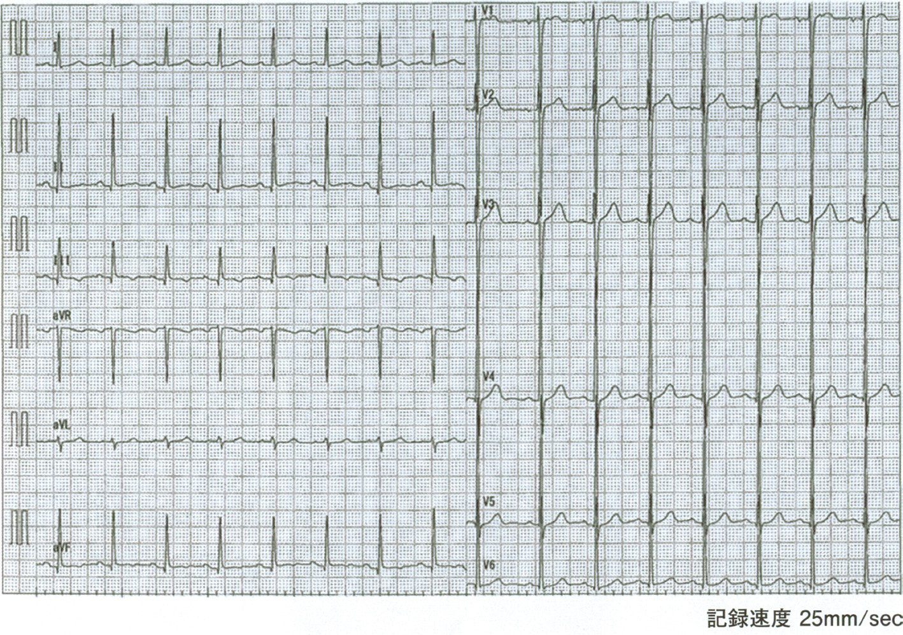
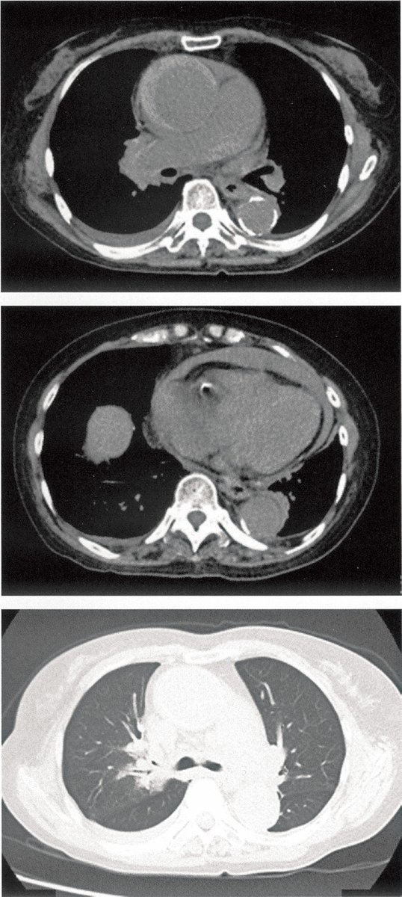
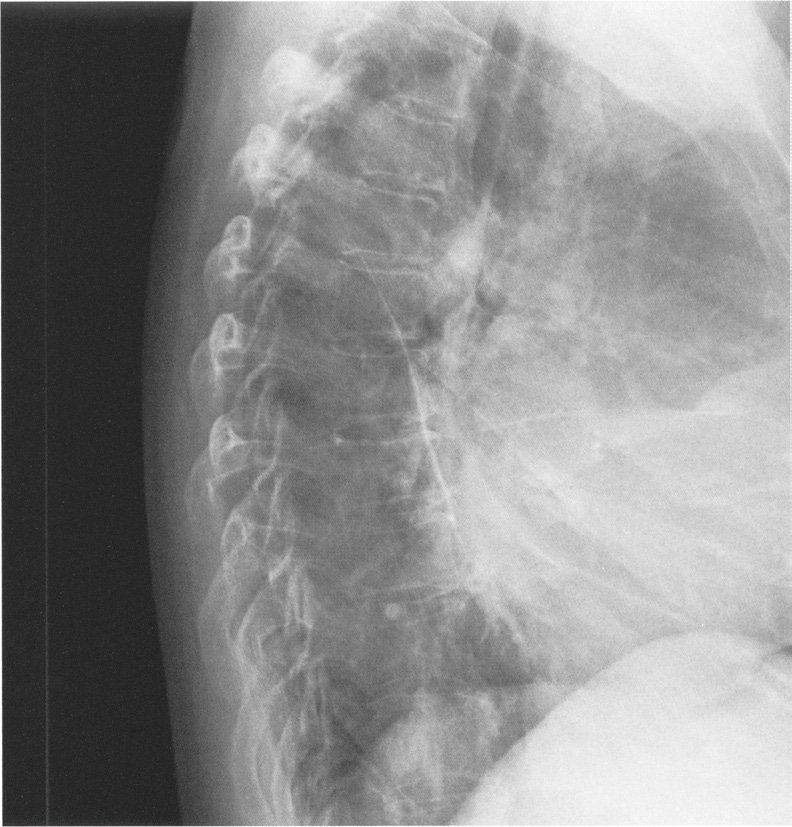
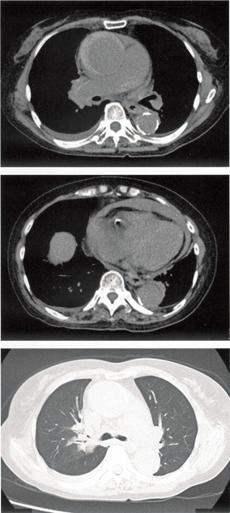
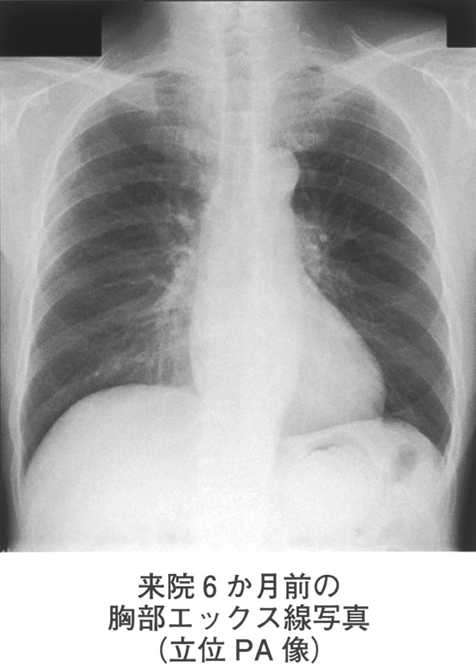

§
第8章 大動脈
Q.470〜Q.515
Q.470(120F-47)📷 画像★正答率 92%
75 歳の男性。健診の腹部超音波検査で異常所見を指摘され来院した。既往歴に、高血圧と脂質異常症がある。身長167cm、体重78kg。体温36.0℃。脈拍70/ 分、整。血圧134/80mmHg。頸静脈の怒張を認めない。心音と呼吸音とに異常を認めない。腹部は平坦、軟で、肝・脾を触知しないが、上腹部に拍動性腫瘤を触知する。両側足背動脈を良好に触知する。血液所見：赤血球468 万、Hb 13.9g/dL、白血球8,300、血小板21 万。血液生化学所見：尿素窒素20mg/dL、クレアチニン1.2mg/dL。CRP 0.2mg/dL。腹部造影CT を示す。
以下は、研修医がこの疾患の治療方針について患者からの質問に応答している様子である。
患 者：「手術が必要なのでしょうか。症状はないので迷います」研修医：
「①症状がなくても破裂する危険があります。動脈瘤の大きさから考えて手術をお勧めします。手術は、人工血管置換術とステントグラフト内挿術の2 種類があります」患 者：「人工血管置換術はどのような治療ですか」研修医：「②大動脈を遮断して行う手術です。③高齢者や併存疾患の多い患者さんに推奨されます」患 者：「ステントグラフトとは何でしょうか」研修医：
「ステントという金属の支持組織と人工血管をあわせた医療器具です。④カテーテルを用いて動脈内に挿入します。
日本では、⑤この治療のほうが多く行われています」下線部のうち、誤っているのはどれか。
以下は、研修医がこの疾患の治療方針について患者からの質問に応答している様子である。
患 者：「手術が必要なのでしょうか。症状はないので迷います」研修医：
「①症状がなくても破裂する危険があります。動脈瘤の大きさから考えて手術をお勧めします。手術は、人工血管置換術とステントグラフト内挿術の2 種類があります」患 者：「人工血管置換術はどのような治療ですか」研修医：「②大動脈を遮断して行う手術です。③高齢者や併存疾患の多い患者さんに推奨されます」患 者：「ステントグラフトとは何でしょうか」研修医：
「ステントという金属の支持組織と人工血管をあわせた医療器具です。④カテーテルを用いて動脈内に挿入します。
日本では、⑤この治療のほうが多く行われています」下線部のうち、誤っているのはどれか。



ａ ①
ｂ ②
ｃ ③
ｄ ④
ｅ ⑤
✅
ｃ 腹部大動脈瘤の治療について：手術（5.5cm以上で手術適応）
腹部大動脈瘤（AAA）：直径5.5cm以上で手術適応（開腹またはEVAR）。
🩸 腹部大動脈瘤（AAA）
定義：腹部大動脈の最大短径>3cm（正常は約2cm）手術適応：①最大径≥5.5cm②6か月で0.5cm以上拡大③症状あり（切迫破裂）
破裂リスク：5cm未満<1%/年→5〜6cm：約3〜5%/年→6cm以上：約10%/年
手術：開腹手術（人工血管置換）またはEVAR（血管内手術）
📋 大動脈瘤の分類・治療
| 種類 | 特徴 | 治療 |
|---|---|---|
| AAA（腹部） | 高齢男性・動脈硬化 | 5.5cm以上→手術・EVAR |
| TAA（胸部） | 高血圧・マルファン症候群 | 5.5〜6cm以上→手術 |
| マルファン症候群 | 大動脈基部・上行大動脈 | 5cm以上→手術 |
| 破裂時の三徴 | 背部痛・低血圧・拍動性腫瘤（Quincke三徴） | 緊急手術 |
🎯 国試ポイント
AAA手術適応=5.5cm以上（または6か月で0.5cm拡大）。EVAR（endovascular aortic repair）は低侵襲だが長期耐久性の問題あり。破裂時は緊急手術。🔍 選択肢解説
本問は腹部大動脈瘤の治療説明で誤った発言を選ぶ。a ①症状がなくても破裂危険があり大きさから手術を勧める：正しい。
b ②大動脈を遮断して行う手術(人工血管置換術)：正しい。
c ③高齢者や併存疾患の多い患者に推奨される：開腹の人工血管置換術は侵襲的で、高リスク例にはステントグラフトが推奨されるため誤り。✓
d ④カテーテルを用いて動脈内に挿入する(ステントグラフト)：正しい。
e ⑤ステントグラフトの方が多く行われている：正しい。
Q.471(118B-45)★
連問 1/2次の文を読み、471 と472 の問いに答えよ。
77 歳の女性。突然の胸背部痛と疲労感を主訴に救急車で搬入された。
現病歴：本日未明に突然の胸背部痛で目覚めて30 分ほどベッドに横になっていたが、身の置き所のない疲労感が増
悪するため救急車を要請した。
既往歴：糖尿病、高血圧症で内服加療中。
生活歴：80 歳の夫と2 人暮らし。問題なく家事をこなしていた。喫煙歴はない。飲酒は機会飲酒。
家族歴：特記すべきことはない。
現 症：意識は清明。身長150cm、体重51kg。体温36.1℃。心拍数96/ 分、整。上肢血圧102/70mmHg、下肢血圧
114/60mmHg。呼吸数15/ 分。
最も疑われる疾患はどれか。
77 歳の女性。突然の胸背部痛と疲労感を主訴に救急車で搬入された。
現病歴：本日未明に突然の胸背部痛で目覚めて30 分ほどベッドに横になっていたが、身の置き所のない疲労感が増
悪するため救急車を要請した。
既往歴：糖尿病、高血圧症で内服加療中。
生活歴：80 歳の夫と2 人暮らし。問題なく家事をこなしていた。喫煙歴はない。飲酒は機会飲酒。
家族歴：特記すべきことはない。
現 症：意識は清明。身長150cm、体重51kg。体温36.1℃。心拍数96/ 分、整。上肢血圧102/70mmHg、下肢血圧
114/60mmHg。呼吸数15/ 分。
最も疑われる疾患はどれか。
ａ 緊張性気胸
ｂ 急性心筋梗塞
ｃ 胸椎圧迫骨折
ｄ 急性大動脈解離
ｅ 急性僧帽弁閉鎖不全症
✅
ｄ 急性大動脈解離（Stanford A型）
突然の胸背部痛+上行大動脈の裂開→Stanford A型大動脈解離→緊急手術。
🩸 急性大動脈解離
Stanford分類：A型（上行大動脈に裂開あり）→緊急手術B型（下行大動脈のみ）→まず降圧療法
Debakey分類：I型（A+B）・II型（A）・III型（B）
症状：突然の激烈な胸背部痛（引き裂かれる痛み）・左右血圧差・AI・AVブロック
📋 Stanford A vs B
| Stanford A | Stanford B | |
| 裂開部位 | 上行大動脈を含む | 下行大動脈のみ |
| 治療 | 緊急手術（保存療法死亡率高い） | 降圧療法（合併症時は手術） |
| 死亡率（未治療） | 約50%/48時間 | 約10%/48時間 |
| 合併症 | 心タンポナーデ・AI・AV blockなど | 下肢虚血・腎虚血 |
🎯 国試ポイント
Stanford A型→緊急手術（30日死亡率：手術10〜15% vs 薬物70%）。Stanford B型→まず降圧療法（HR<60/分・収縮期圧<120mmHg）。診断：造影CT（第一選択）。🔍 選択肢解説
a 緊張性気胸：呼吸不全が主で合わない。b 急性心筋梗塞：可能性はあるが四肢血圧差を説明しにくい。
c 胸椎圧迫骨折：突然の激痛の病像と合わない。
d 急性大動脈解離：突然の胸背部痛＋上下肢(四肢)血圧差で最も疑われる。✓
e 急性僧帽弁閉鎖不全症：合わない。
Q.472(118B-46)📷 画像★
連問 2/2次の文を読み、471 と472 の問いに答えよ。
77 歳の女性。突然の胸背部痛と疲労感を主訴に救急車で搬入された。
現病歴：本日未明に突然の胸背部痛で目覚めて30 分ほどベッドに横になっていたが、身の置き所のない疲労感が増
悪するため救急車を要請した。
既往歴：糖尿病、高血圧症で内服加療中。
生活歴：80 歳の夫と2 人暮らし。問題なく家事をこなしていた。喫煙歴はない。飲酒は機会飲酒。
家族歴：特記すべきことはない。
現 症：意識は清明。身長150cm、体重51kg。体温36.1℃。心拍数96/ 分、整。上肢血圧102/70mmHg、下肢血圧
114/60mmHg。呼吸数15/ 分。
急性大動脈解離のStanford A型患者（血圧92/62）への対応はどれか。
77 歳の女性。突然の胸背部痛と疲労感を主訴に救急車で搬入された。
現病歴：本日未明に突然の胸背部痛で目覚めて30 分ほどベッドに横になっていたが、身の置き所のない疲労感が増
悪するため救急車を要請した。
既往歴：糖尿病、高血圧症で内服加療中。
生活歴：80 歳の夫と2 人暮らし。問題なく家事をこなしていた。喫煙歴はない。飲酒は機会飲酒。
家族歴：特記すべきことはない。
現 症：意識は清明。身長150cm、体重51kg。体温36.1℃。心拍数96/ 分、整。上肢血圧102/70mmHg、下肢血圧
114/60mmHg。呼吸数15/ 分。
急性大動脈解離のStanford A型患者（血圧92/62）への対応はどれか。


ａ 経過観察
ｂ 緊急手術
ｃ 胸腔ドレナージ
ｄ 心臓カテーテル検査
ｅ 大動脈内バルーンパンピング〈IABP〉挿入
✅
ｂ 緊急手術（心臓血管外科チームへの緊急コンサルト・手術室へ搬送）
Stanford A型は保存療法での死亡率が非常に高く、緊急手術が絶対適応。
🎯 国試ポイント
Stanford A型大動脈解離=緊急手術。術前処置：①モルヒネ（疼痛緩和）②β遮断薬（心拍数管理）③降圧（収縮期圧100〜120mmHg）④輸血・輸液（ショック対応）⑤ICU管理。🔍 選択肢解説
a 経過観察：A型は緊急対応を要し不適。b 緊急手術：Stanford A型は緊急手術の適応。✓
c 胸腔ドレナージ：不適。
d 心臓カテーテル検査：不要。
e 大動脈内バルーンパンピング〈IABP〉挿入：解離を拡大させ禁忌。
Q.473(117F-50)📷 画像★正答率 97%
76 歳の女性。嗄声を主訴に来院した。3 か月前から声がかすれることに気付いた。様子をみていたが症状が改善しないため受診した。高血圧症、脂質異常症で自宅近くの診療所に通院中である。喫煙は10 本/ 日を40 年間。2 年前から禁煙している。意識は清明。体温36.2℃。脈拍76/ 分、整。血圧142/78mmHg。呼吸数18/ 分。SpO2 98％（room air）。心音と呼吸音とに異常を認めない。腹部は平坦、軟で、肝・脾を触知しない。下腿浮腫なし。血液所見：
赤血球391 万、Hb 12.7g/dL、Ht 36％、白血球8,300、血小板23 万。血液生化学所見：総蛋白7.2g/dL、アルブミン3.5g/dL、総ビリルビン0.5mg/dL、AST 25U/L、ALT 17U/L、尿素窒素21mg/dL、クレアチニン1.1mg/dL。CRP0.1mg/dL。5 年前と今回受診時の胸部エックス線写真を示す。
次に行う検査として最も正しいのはどれか。
赤血球391 万、Hb 12.7g/dL、Ht 36％、白血球8,300、血小板23 万。血液生化学所見：総蛋白7.2g/dL、アルブミン3.5g/dL、総ビリルビン0.5mg/dL、AST 25U/L、ALT 17U/L、尿素窒素21mg/dL、クレアチニン1.1mg/dL。CRP0.1mg/dL。5 年前と今回受診時の胸部エックス線写真を示す。
次に行う検査として最も正しいのはどれか。

ａ 胸部CT
ｂ 胸腔鏡検査
ｃ 気管支鏡検査
ｄ 呼吸機能検査
ｅ 冠動脈造影カテーテル検査
✅
ａ 胸部CT
嗄声（反回神経麻痺）+高齢+高血圧→大動脈瘤による反回神経圧迫を疑う→胸部CT。
🩸 嗄声と大動脈瘤
反回神経麻痺：左反回神経は大動脈弓を回り込む（右は鎖骨下動脈）→胸部大動脈瘤（特に弓部・下行）が左反回神経を圧迫→嗄声（Ortner症候群）
鑑別：肺癌・甲状腺腫瘍・縦隔腫瘤・外科手術後
検査：胸部CT（第一選択）→大動脈瘤の有無・肺病変の確認
🎯 国試ポイント
嗄声+心血管疾患=Ortner症候群。原因：大動脈瘤（弓部・下行大動脈）による左反回神経圧迫。次の検査は胸部CT。他の嗄声原因：甲状腺癌・肺尖部肺癌（Pancoast腫瘍）・縦隔腫瘍。🔍 選択肢解説
a 胸部CT：胸部大動脈瘤による反回神経麻痺(嗄声)の評価にCT。✓b 胸腔鏡検査：不適。
c 気管支鏡検査：主でない。
d 呼吸機能検査：主でない。
e 冠動脈造影カテーテル検査：不要。
Q.474(113D-9)★正答率 81%
急性大動脈解離の合併症として出現し得る徴候に含まれないのはどれか。
ａ 視野障害
ｂ Barré 徴候陽性
ｃ 後脛骨動脈の触知不良
ｄ 心音のⅠ音とⅡ音の減弱
ｅ 心尖部を最強点とする全収縮期雑音
✅
ｅ 心尖部を最強点とする全収縮期雑音
心尖部全収縮期雑音（MR音）は大動脈解離の直接合併症ではない。AIは拡張期雑音（胸骨左縁）。
📋 急性大動脈解離の合併症
| 合併症 | 機序 |
|---|---|
| 心タンポナーデ | 解離血液が心嚢腔に流出→血圧↓・頸静脈怒張・心音減弱 |
| 大動脈弁閉鎖不全（AI） | A型：弁輪拡大・弁支持組織破壊→拡張期雑音（胸骨左縁） |
| AV block・AMI | RCA分枝部への解離→下壁梗塞・AVblock |
| 脳梗塞・片麻痺・視野障害 | 頸動脈・腕頭動脈への解離（Barré徴候陽性） |
| 下肢虚血（後脛骨動脈触知不良） | 腸骨動脈への解離→閉塞・下肢疼痛・脈消失 |
| 腎不全 | 腎動脈への解離→乏尿 |
| 全収縮期雑音（MR） | 大動脈解離の直接合併症ではない |
🎯 国試ポイント
大動脈解離でAIを合併する場合は拡張期雑音（胸骨左縁）。心尖部を最強点とする全収縮期雑音（MR音）は通常合併しない。視野障害・Barré徴候・後脛骨動脈触知不良・心音減弱はすべて合併しうる。🔍 選択肢解説
a 視野障害：頸動脈への解離波及で生じうる。b Barré徴候陽性：脳虚血で生じうる。
c 後脛骨動脈の触知不良：下肢虚血で生じうる。
d 心音のⅠ音とⅡ音の減弱：心タンポナーデで生じうる。
e 心尖部を最強点とする全収縮期雑音：僧帽弁閉鎖不全の雑音で、解離は大動脈弁閉鎖不全(拡張期雑音)を来し含まれない。✓
Q.475(113F-48)★正答率 59%
70 歳の女性。胸背部痛のため救急車で搬入された。自宅で家事中に突然、胸背部痛を訴え、その後意識が低下したため夫が救急車を要請した。健診で血圧が高いと指摘されたことがある。ADL は自立しており、発症前の状態はいつもと変わりなかった。搬入時、意識レベルはJCSⅢ-100。心拍数100/ 分、整。上肢の血圧は計測不能。下肢の血圧は70mmHg（触診）。呼吸数30/ 分。SpO2 計測不能。頸静脈の怒張を認める。橈骨動脈は両側とも微弱にしか触知しないが、両側頸動脈と両側大腿動脈は触知する。胸部聴診でⅠ音とⅡ音が減弱している。呼吸音に異常を認めない。腹部は平坦、軟で、肝・脾を触知しない。四肢に網状皮斑を認める。
最も優先される検査はどれか。
最も優先される検査はどれか。
ａ 下肢静脈超音波検査
ｂ 心エコー検査
ｃ 胸椎MRI
ｄ 頭部CT
ｅ 胸部CT
✅
ｂ 心エコー検査
心音減弱+頸静脈怒張+低血圧→心タンポナーデを疑う→心エコーで心嚢液確認が最優先。
🩸 心タンポナーデの診断
Beck三徴：①低血圧②頸静脈怒張③心音減弱（遠くなる）→心嚢液貯留→心エコー（最初の検査）→心嚢ドレナージ
大動脈解離A型の合併として発生した場合：緊急手術（ドレナージのみでは不可）
奇脈：吸気時収縮期血圧>10mmHg低下→タンポナーデの重要サイン
📋 急性大動脈解離の初期診断手順
| 状況 | 対応 |
|---|---|
| 胸背部痛+血圧差 | 左右上肢血圧差>20mmHg→解離を疑う |
| 心タンポナーデ疑い | 心エコー（最初の検査）→心嚢液確認 |
| 安定している場合 | 胸腹部造影CT（確定診断） |
| Stanford A確定 | 緊急手術（外科コンサルト） |
🎯 国試ポイント
大動脈解離A型→心タンポナーデ合併時はBeck三徴を認める。この場合心エコーが最優先（造影CTより先）。心エコーで心嚢液→緊急手術（心嚢ドレナージ単独は禁忌→再タンポで死亡）。🔍 選択肢解説
a 下肢静脈超音波検査：不要。b 心エコー検査：心タンポナーデ(頸静脈怒張・心音減弱)の評価に最優先。✓
c 胸椎MRI：不適。
d 頭部CT：主でない。
e 胸部CT：有用だが不安定でありまず心エコー。
Q.476(112A-45)★📷 画像正答率 94%
79歳の男性。胸部エックス線写真の異常陰影を指摘されて来院した。精査のために行った胸腹部造影3D-CTを示す。
この疾患に対する手術に際し、最も注意すべき合併症はどれか。
この疾患に対する手術に際し、最も注意すべき合併症はどれか。

ａ 髄膜炎
ｂ 脊髄梗塞
ｃ 正常圧水頭症
ｄ 胸郭出口症候群
ｅ 急性硬膜下血腫
✅
ｂ 脊髄梗塞
胸部大動脈瘤手術（特に下行・胸腹部）：Adamkiewicz動脈（脊髄栄養血管）遮断→対麻痺（脊髄梗塞）。
🩸 胸部大動脈瘤手術の合併症
脊髄梗塞（対麻痺）：Adamkiewicz動脈（大動脈から分枝、T8〜L2）が遮断→脊髄前脊髄動脈虚血予防：①脊髄ドレナージ（CSF排出で脊髄灌流圧↑）②体外循環中の脊髄保護③TEVAR後の麻痺モニタリング
その他の合併症：腎不全・呼吸不全・出血・脳卒中
🎯 国試ポイント
胸部（下行）大動脈瘤手術の最大の特異的合併症は脊髄梗塞→対麻痺。Adamkiewicz動脈はTh8〜L2レベルで大動脈から分枝。予防に脊髄液ドレナージを行う。🔍 選択肢解説
a 髄膜炎：主でない。b 脊髄梗塞：胸腹部大動脈瘤手術でAdamkiewicz動脈が障害され対麻痺(脊髄梗塞)を来しうる。✓
c 正常圧水頭症：無関係。
d 胸郭出口症候群：無関係。
e 急性硬膜下血腫：無関係。
Q.477(112B-12)★正答率 98%
大動脈解離による腰背部痛の特徴はどれか。
ａ 突然の発症
ｂ 数日間の高熱の先行
ｃ 前屈での痛みの軽減
ｄ 圧迫による痛みの軽減
ｅ 呼吸による痛みの強さの変動
✅
ａ 突然の発症
大動脈解離の痛み：突然発症の激烈な引き裂かれるような胸背部痛が特徴。
📋 腰背部痛の鑑別と特徴
| 疾患 | 特徴 |
| 大動脈解離 | 突然発症・引き裂かれる痛み・移動する痛み・左右血圧差 |
| 腰椎椎間板ヘルニア | 徐々に発症・前屈で悪化・下肢放散痛・SLRテスト陽性 |
| 腎盂腎炎 | 発熱先行・CVA叩打痛・膿尿 |
| 尿路結石 | 突然の疝痛・側腹部〜鼠径部放散 |
| 筋筋膜性腰痛 | 動作時・圧迫で軽減・呼吸で変動なし |
| 胸膜炎 | 呼吸性に変動する胸痛 |
🎯 国試ポイント
大動脈解離の痛みの3特徴：①突然発症（最重要）②引き裂かれる・移動する③胸背部〜腰部。高熱先行・前屈軽減・圧迫軽減・呼吸変動はいずれも大動脈解離の特徴ではない。🔍 選択肢解説
a 突然の発症：突然・引き裂かれるような発症時最強の痛み。✓b 数日間の高熱の先行：感染性で解離でない。
c 前屈での痛みの軽減：整形疾患の特徴。
d 圧迫による痛みの軽減：筋骨格性の特徴。
e 呼吸による痛みの強さの変動：胸膜性の特徴。
Q.478(111I-78)📷 画像★2択正答率 86%
34 歳の男性。大動脈解離の定期受診のため来院した。2 年前に胸部下行大動脈解離を指摘され、以後、自宅近くの診療所で降圧薬の投与を受けている。自覚症状は特にない。父親は30 歳台で大動脈疾患で死亡した。喫煙歴と飲酒歴はない。身長179cm、体重50kg。体温36.7℃。脈拍72/ 分、整。血圧104/36mmHg。呼吸数16/ 分。SpO2 96％（room air）。眼瞼結膜と眼球結膜とに異常を認めない。胸骨左縁第3 肋間を最強点とするⅣ/ Ⅵの拡張期雑音を聴取する。呼吸音に異常を認めない。腹部は平坦、軟で、肝・脾を触知しない。四肢が長く、クモ状指趾を認める。四肢末梢の動脈拍動に差を認めない。水晶体偏位を認める。胸部造影CT（A ～D）と心エコー図（E）とを示す。
この患者について正しいのはどれか。2 つ選べ。
この患者について正しいのはどれか。2 つ選べ。


ａ 常染色体劣性遺伝である。
ｂ 大量の心囊液貯留を認める。
ｃ Stanford A 型大動脈解離である。
ｄ 大動脈弁尖に著明な石灰化を認める。
ｅ 大動脈弁置換術および人工血管置換術の適応である。
✅
ｃ Stanford A型大動脈解離である ＋ ｅ 大動脈弁置換術および人工血管置換術の適応である
マルファン症候群＋大動脈弁閉鎖不全＋大動脈解離→Stanford A型→緊急または待機的手術適応。
🩸 マルファン症候群と大動脈
マルファン症候群：FBN1遺伝子変異（フィブリリン-1）→常染色体優性遺伝大動脈病変：大動脈基部拡大・上行大動脈瘤・大動脈解離（若年に多い）
身体所見：高身長・蜘蛛状指趾・水晶体脱臼・高口蓋・脊柱側弯・漏斗胸
治療：β遮断薬（大動脈拡大抑制）・大動脈根部手術（5cm以上）
📋 本症例の分析
| 所見 | 意義 |
|---|---|
| 所見 | 意義 |
| クモ状指趾・若年・家族歴 | マルファン症候群 |
| 拡張期雑音（胸骨左縁第3肋間） | 大動脈弁閉鎖不全（AI）→上行大動脈関与 |
| 脈圧拡大（104/36→PP68） | AI：拡張期圧低下 |
| 上行大動脈関与 | Stanford A型（下行のみ→B型、だが今回はAI合併でA型） |
| AI合併大動脈解離 | 大動脈弁置換術+人工血管置換術適応 |
🎯 国試ポイント
マルファン症候群：常染色体優性遺伝（劣性ではない）。大動脈弁閉鎖不全（胸骨左縁拡張期雑音）→上行大動脈関与→Stanford A型。AIあり→大動脈弁置換術も必要。遺伝形式に注意。🔍 選択肢解説
Marfan症候群(高身長・クモ状指趾・水晶体偏位)の大動脈基部解離。a 常染色体劣性遺伝である：常染色体顕性(優性)遺伝で誤り。
b 大量の心囊液貯留を認める：合わない。
c Stanford A型大動脈解離である：上行大動脈に及ぶA型。✓
d 大動脈弁尖に著明な石灰化を認める：Marfanは石灰化でなく拡張で誤り。
e 大動脈弁置換術および人工血管置換術の適応である：A型解離＋AR＋基部拡大でBentall手術等の適応。✓
Q.479(104A-23)📷 画像★正答率 27%
75 歳の女性。突然の背部痛を主訴に来院した。高血圧のため投薬を受けている。胸部造影CT を示す。
合併する病態として考えにくいのはどれか。
合併する病態として考えにくいのはどれか。

ａ 喀 血
ｂ 腸管壊死
ｃ 急性腎不全
ｄ 下肢急性虚血
ｅ 大動脈弁閉鎖不全
✅
ｅ 大動脈弁閉鎖不全
Stanford B型解離（下行大動脈のみ）→AIは上行大動脈関与のA型で合併。B型ではAIは合併しにくい。
📋 Stanford B型解離の合併症
| 合併症 | 機序 | 合併の可能性 |
| 喀血 | 左胸腔・気管支への解離血液流出 | ○あり |
| 腸管壊死 | SMA・腸管動脈への解離 | ○あり |
| 急性腎不全 | 腎動脈への解離→虚血 | ○あり |
| 下肢急性虚血 | 腸骨動脈への解離→閉塞 | ○あり |
| 大動脈弁閉鎖不全（AI） | B型では上行大動脈非関与→AI合併しにくい | ×考えにくい |
🎯 国試ポイント
Stanford B型→下行大動脈のみ→上行大動脈・弁輪は非関与→AIは合併しない。A型はAI・心タンポナーデ・脳梗塞を合併。B型は下肢虚血・腎不全・腸管壊死・血胸を合併。🔍 選択肢解説
a 喀血：肺への破裂で生じうる。b 腸管壊死：腹部分枝閉塞で生じうる。
c 急性腎不全：腎動脈閉塞で生じうる。
d 下肢急性虚血：腸骨動脈閉塞で生じうる。
e 大動脈弁閉鎖不全：下行(B型)解離では大動脈弁に及ばずAR合併しにくい。✓
Q.480(118A-1)正答率 94%
無症状で発見されることが多い疾患はどれか。
ａ 大動脈解離
ｂ 腹部大動脈瘤
ｃ 感染性心内膜炎
ｄ 冠攣縮性狭心症
ｅ たこつぼ心筋症
✅
ｂ 腹部大動脈瘤
AAAは破裂まで無症状のことが多い。健診や他疾患の検索中に偶然発見される。
📋 各疾患の発見状況
| 疾患 | 典型的な発見経緯 |
| 腹部大動脈瘤（AAA） | 無症状で偶然発見（腹部エコー・CT）が多い |
| 大動脈解離 | 突然の激烈な胸背部痛→救急受診 |
| 感染性心内膜炎 | 発熱・心雑音・塞栓症状で受診 |
| 冠攣縮性狭心症 | 安静時胸痛（深夜〜早朝）で受診 |
| たこつぼ心筋症 | 強いストレス後の胸痛・ST上昇で受診 |
🎯 国試ポイント
AAA=無症状で偶然発見されることが多い。腹部膨満や拍動感に気付くことも。高齢男性・高血圧・喫煙が危険因子。破裂時は三徴（腹背部痛・低血圧・拍動性腫瘤）→緊急手術。🔍 選択肢解説
a 大動脈解離：突然の激痛で発症する。b 腹部大動脈瘤：無症状で偶発的に発見されることが多い。✓
c 感染性心内膜炎：発熱等の症状がある。
d 冠攣縮性狭心症：胸痛で発症する。
e たこつぼ心筋症：胸痛で発症する。
Q.481(116D-6)正答率 76%
大動脈瘤の原因にならないのはどれか。
ａ 梅 毒
ｂ 動脈硬化
ｃ Buerger 病
ｄ 高安動脈炎
ｅ Marfan 症候群
✅
ｃ Buerger病
Buerger病（血栓閉塞性血管炎）は末梢小動脈・静脈の閉塞性疾患→大動脈瘤の原因にならない。
📋 大動脈瘤の原因
| 原因 | 特徴 |
| 動脈硬化（最多） | 高齢男性・高血圧・喫煙→中膜変性 |
| マルファン症候群 | FBN1変異→中膜囊胞状壊死→大動脈基部・上行 |
| 梅毒（三期） | 大動脈炎→上行大動脈瘤・AI合併（現在は稀） |
| 高安動脈炎 | 若年女性・大動脈炎→大動脈瘤・狭窄 |
| 巨細胞性動脈炎 | 高齢者・側頭動脈炎→大動脈瘤も |
| Buerger病 | 末梢閉塞性疾患→大動脈瘤の原因にならない |
🎯 国試ポイント
Buerger病（TAO）は若年男性・喫煙・末梢動静脈の閉塞性病変→四肢の虚血・壊疽。大動脈には関与しない。大動脈瘤の原因から除外される疾患として頻出。🔍 選択肢解説
a 梅毒：梅毒性大動脈瘤の原因。b 動脈硬化：大動脈瘤の最多原因。
c Buerger病：四肢の中小動脈の閉塞性疾患で大動脈瘤を来さない。✓
d 高安動脈炎：大動脈瘤の原因。
e Marfan症候群：大動脈瘤・解離の原因。
Q.482(114B-32)📷 画像正答率 97%
70 歳の女性。突然の胸背部痛と呼吸困難のため救急車で搬入された。洗濯物を干していたとき、突然、激烈な胸背部痛を自覚した。発症10 分後くらいから息苦しさが出現し、喘鳴も生じてきたため救急車を要請した。意識レベルはJCSⅡ-10。心拍数110/ 分、整。血圧は76/38mmHg で左右差を認めない。呼吸数24/ 分。SpO2 94％（リザーバー付マスク10L/ 分酸素投与下）。冷汗を認め、皮膚は湿潤している。両側胸部にcoarse crackles を聴取する。胸骨左縁第3 肋間を最強とするⅢ/Ⅵの拡張期雑音を認める。血液所見：赤血球350 万、Hb 11.6g/dL、Ht 39％、白血球9,600、
血小板21 万。血液生化学所見：AST 30U/L、ALT 26U/L、尿素窒素14mg/dL、クレアチニン0.6mg/dL、血糖99mg/dL、Na 136mEq/L、K 3.8mEq/L、Cl 100mEq/L。心電図では明らかなST-T 変化は認めない。胸部エックス線写真（A）及び心エコー図（B，C）を示す。
適切な対応はどれか。
血小板21 万。血液生化学所見：AST 30U/L、ALT 26U/L、尿素窒素14mg/dL、クレアチニン0.6mg/dL、血糖99mg/dL、Na 136mEq/L、K 3.8mEq/L、Cl 100mEq/L。心電図では明らかなST-T 変化は認めない。胸部エックス線写真（A）及び心エコー図（B，C）を示す。
適切な対応はどれか。



ａ 緊急手術
ｂ 降圧薬投与
ｃ 胸腔ドレナージ
ｄ 経皮的冠動脈形成術
ｅ 大動脈内バルーンパンピング〈IABP〉挿入
✅
ａ 緊急手術
AI合併Stanford A型→緊急手術（AI修復+人工血管置換）。AI合併でも手術の緊急性は変わらない。
🎯 国試ポイント
Stanford A型+AI合併→緊急手術。IABPは大動脈弁閉鎖不全に禁忌（拡張期バルーン膨張で逆流↑）。β遮断薬でHR管理→手術まで橋渡し。🔍 選択肢解説
a 緊急手術：A型解離＋大動脈弁閉鎖不全・心不全で緊急手術。✓b 降圧薬投与：ショック(76/38)で降圧は不適。
c 胸腔ドレナージ：不適。
d 経皮的冠動脈形成術：不適。
e 大動脈内バルーンパンピング〈IABP〉挿入：ARで禁忌。
Q.483(114C-69)正答率 91%
連問 1/366 歳の男性。胸背部痛と左上下肢の筋力低下のため救急車で搬入された。
現病歴：本日午前11 時、デスクワーク中に本棚上段から書類を取ろうと手を伸ばしたところ、激烈な胸背部痛が突
然出現した。その後すぐに左片麻痺が出現し、さらに重苦しい胸痛と冷汗が出現したため、発症から30 分後に救
急車を要請した。
既往歴：2 年前から高血圧症で通院治療中。
生活歴：妻と2 人暮らし。喫煙歴はない。飲酒は機会飲酒。
家族歴：父親は脳出血のため86 歳で死亡。母は胃癌のため88 歳で死亡。
現 症：意識は清明。身長162cm、体重80kg。血圧78/62mmHg で明らかな左右差を認めない。
適切なのはどれか。
現病歴：本日午前11 時、デスクワーク中に本棚上段から書類を取ろうと手を伸ばしたところ、激烈な胸背部痛が突
然出現した。その後すぐに左片麻痺が出現し、さらに重苦しい胸痛と冷汗が出現したため、発症から30 分後に救
急車を要請した。
既往歴：2 年前から高血圧症で通院治療中。
生活歴：妻と2 人暮らし。喫煙歴はない。飲酒は機会飲酒。
家族歴：父親は脳出血のため86 歳で死亡。母は胃癌のため88 歳で死亡。
現 症：意識は清明。身長162cm、体重80kg。血圧78/62mmHg で明らかな左右差を認めない。
適切なのはどれか。
ａ 「6 か月前と比較して胃泡が多くなっています」
ｂ 「本日の写真では下行大動脈が認められません」
ｃ 「本日の写真では著しい気管の偏位が認められます」
ｄ 「6 か月前と心拡大の程度を比較するのは困難です」
ｅ 「いずれの写真でもCP アングル〈肋骨横隔膜角〉は鋭なので胸水貯留はありません」
✅
ｄ 「6か月前と心拡大の程度を比較するのは困難です」
臥位と立位では心胸郭比が異なる（臥位で大きく見える）→体位が違えば比較困難。
🩸 胸部X線読影の注意点
体位の影響：立位PA→CTR<50%正常。臥位（ポータブル）→CTR>50%でも異常とは限らない（静脈還流↑・体位変化）比較時の注意：撮影体位・吸気量・撮影距離が異なる場合は定量的比較が困難
下行大動脈：胸部X線で通常左縁に見える
🎯 国試ポイント
胸部X線でCTRを比較する際、撮影体位（立位vs臥位）が異なる場合は比較困難。立位では横隔膜が下がり心臓が小さく見え、臥位では横隔膜が上がり心臓が大きく見える。コメントとして正確な指摘が求められる。🔍 選択肢解説
a 「6か月前と比較して胃泡が多くなっています」：解離と無関係で不適。b 「本日の写真では下行大動脈が認められません」：不適。
c 「本日の写真では著しい気管の偏位が認められます」：不適。
d 「6か月前と心拡大の程度を比較するのは困難です」：撮影条件が異なれば心拡大の比較は困難で適切。✓
e 「CPアングルは鋭なので胸水貯留はありません」：断定は不適。
Q.484(114C-70)正答率 89%
連問 2/366 歳の男性。胸背部痛と左上下肢の筋力低下のため救急車で搬入された。
現病歴：本日午前11 時、デスクワーク中に本棚上段から書類を取ろうと手を伸ばしたところ、激烈な胸背部痛が突
然出現した。その後すぐに左片麻痺が出現し、さらに重苦しい胸痛と冷汗が出現したため、発症から30 分後に救
急車を要請した。
既往歴：2 年前から高血圧症で通院治療中。
生活歴：妻と2 人暮らし。喫煙歴はない。飲酒は機会飲酒。
家族歴：父親は脳出血のため86 歳で死亡。母は胃癌のため88 歳で死亡。
現 症：意識は清明。身長162cm、体重80kg。血圧78/62mmHg で明らかな左右差を認めない。
突然の胸背部痛・意識低下・頸静脈怒張・心音減弱の患者。この時点で可能性が低い疾患はどれか。
現病歴：本日午前11 時、デスクワーク中に本棚上段から書類を取ろうと手を伸ばしたところ、激烈な胸背部痛が突
然出現した。その後すぐに左片麻痺が出現し、さらに重苦しい胸痛と冷汗が出現したため、発症から30 分後に救
急車を要請した。
既往歴：2 年前から高血圧症で通院治療中。
生活歴：妻と2 人暮らし。喫煙歴はない。飲酒は機会飲酒。
家族歴：父親は脳出血のため86 歳で死亡。母は胃癌のため88 歳で死亡。
現 症：意識は清明。身長162cm、体重80kg。血圧78/62mmHg で明らかな左右差を認めない。
突然の胸背部痛・意識低下・頸静脈怒張・心音減弱の患者。この時点で可能性が低い疾患はどれか。
ａ 脳梗塞
ｂ 大動脈解離
ｃ 急性冠症候群
ｄ 肺血栓塞栓症
ｅ 心タンポナーデ
✅
ｄ 肺血栓塞栓症
肺血栓塞栓症は呼吸困難・低酸素・右心負荷が主体。心音減弱・頸静脈怒張・突然胸背部痛は心タンポナーデや解離の所見。
📋 突然の胸背部痛・ショックの鑑別
| 疾患 | 特徴的所見 | 可能性 |
| 急性大動脈解離 | 胸背部痛・左右血圧差・移動する痛み | ○高い |
| 心タンポナーデ | Beck三徴（低血圧・頸静脈怒張・心音減弱） | ○高い |
| 急性冠症候群 | 胸痛・ST変化・トロポニン上昇 | ○高い |
| 脳梗塞（大血管源性） | 解離による頸動脈閉塞→片麻痺 | ○高い |
| 肺血栓塞栓症 | 呼吸困難・低酸素・D-dimer↑→心音減弱は非典型 | △低い |
🎯 国試ポイント
心音減弱+頸静脈怒張→心タンポナーデ（Beck三徴）が特徴。肺塞栓症は主に呼吸困難・低酸素・右心負荷が主体→心音減弱や胸背部痛（引き裂かれる）は典型的ではない。🔍 選択肢解説
突然の胸背部痛＋意識低下＋頸静脈怒張＋心音減弱は大動脈解離＋タンポナーデを示唆する。a 脳梗塞：解離の頸動脈波及で片麻痺があり可能性あり。
b 大動脈解離：最も疑われる。
c 急性冠症候群：胸痛で可能性あり。
d 肺血栓塞栓症：片麻痺を伴う本病像に合いにくく可能性が低い。✓
e 心タンポナーデ：頸静脈怒張・心音減弱で可能性あり。
Q.485(114C-71)正答率 20%
連問 3/366 歳の男性。胸背部痛と左上下肢の筋力低下のため救急車で搬入された。
現病歴：本日午前11 時、デスクワーク中に本棚上段から書類を取ろうと手を伸ばしたところ、激烈な胸背部痛が突
然出現した。その後すぐに左片麻痺が出現し、さらに重苦しい胸痛と冷汗が出現したため、発症から30 分後に救
急車を要請した。
既往歴：2 年前から高血圧症で通院治療中。
生活歴：妻と2 人暮らし。喫煙歴はない。飲酒は機会飲酒。
家族歴：父親は脳出血のため86 歳で死亡。母は胃癌のため88 歳で死亡。
現 症：意識は清明。身長162cm、体重80kg。血圧78/62mmHg で明らかな左右差を認めない。
突然の胸背部痛の患者。治療方針決定のために優先される検査はどれか。
現病歴：本日午前11 時、デスクワーク中に本棚上段から書類を取ろうと手を伸ばしたところ、激烈な胸背部痛が突
然出現した。その後すぐに左片麻痺が出現し、さらに重苦しい胸痛と冷汗が出現したため、発症から30 分後に救
急車を要請した。
既往歴：2 年前から高血圧症で通院治療中。
生活歴：妻と2 人暮らし。喫煙歴はない。飲酒は機会飲酒。
家族歴：父親は脳出血のため86 歳で死亡。母は胃癌のため88 歳で死亡。
現 症：意識は清明。身長162cm、体重80kg。血圧78/62mmHg で明らかな左右差を認めない。
突然の胸背部痛の患者。治療方針決定のために優先される検査はどれか。
ａ 心臓MRI
ｂ 胸部造影CT
ｃ 冠動脈造影CT
ｄ D ダイマー測定
ｅ 心筋トロポニンT 測定
✅
ｂ 胸部造影CT
急性大動脈解離の確定診断には造影CT（第一選択）→解離の範囲・Stanford分類・分枝への影響を評価。
🩸 大動脈解離の確定診断
胸部造影CT（第一選択）：二腔（真腔・偽腔）・intimal flap・解離範囲・分枝病変を評価感度・特異度：ともに約98〜99%
心エコー（経食道TEE）：CTの代替（不安定な患者、搬送困難時）
禁忌：造影剤アレルギー・腎不全では慎重に（緊急時は使用）
📋 各検査の位置づけ
| 検査 | 役割 | 第一選択か |
| 胸部造影CT | 解離範囲確定・Stanford分類・分枝確認 | 第一選択 |
| 心エコー（TTE） | タンポナーデ・AI評価（ベッドサイド可） | 補助的 |
| MRI | 詳細な評価だが時間がかかる | 急性期不向き |
| D-dimer | 陰性なら解離を否定できる | スクリーニング |
| トロポニン | ACS除外（解離でも上昇することあり） | 鑑別補助 |
🎯 国試ポイント
大動脈解離の確定診断=胸部造影CT（第一選択）。CT所見：二腔構造・内膜弁（intimal flap）。MRIは時間がかかり急性期には不向き。D-dimerは陰性で解離を否定できるが、治療方針決定にはCTが必須。🔍 選択肢解説
a 心臓MRI：時間がかかり急性期に不適。b 胸部造影CT：大動脈解離の診断・範囲評価に優先。✓
c 冠動脈造影CT：主でない。
d Dダイマー測定：補助的。
e 心筋トロポニンT測定：補助的。
Q.486(112A-67)📷 画像2択正答率 91%
56 歳の男性。胸背部痛のため救急車で搬入された。本日、事務仕事中に突然の胸背部痛を訴えた後、意識消失した。
意識は数秒で回復したが胸背部痛が持続するため、同僚が救急車を要請した。意識は清明。身長163cm、体重56kg。
体温36.2℃。心拍数92/ 分、整。血圧（上肢）右194/104mmHg、左198/110mmHg。呼吸数24/ 分。SpO2 100％（マスク10L/ 分酸素投与下）。心音と呼吸音とに異常を認めない。神経学的所見に異常を認めない。血液所見：白血球21,000。血液生化学所見：AST 15U/L、ALT 15U/L、LD 261U/L（基準176 ～353）、尿素窒素18mg/dL、クレアチニン0.6mg/dL、尿酸6.4mg/dL、血糖115mg/dL、Na 142mEq/L、K 3.8mEq/L、Cl 107mEq/L、心筋トロポニンT 陰性。心電図に異常を認めない。胸部造影CT を示す。
治療として適切なのはどれか。2 つ選べ。
意識は数秒で回復したが胸背部痛が持続するため、同僚が救急車を要請した。意識は清明。身長163cm、体重56kg。
体温36.2℃。心拍数92/ 分、整。血圧（上肢）右194/104mmHg、左198/110mmHg。呼吸数24/ 分。SpO2 100％（マスク10L/ 分酸素投与下）。心音と呼吸音とに異常を認めない。神経学的所見に異常を認めない。血液所見：白血球21,000。血液生化学所見：AST 15U/L、ALT 15U/L、LD 261U/L（基準176 ～353）、尿素窒素18mg/dL、クレアチニン0.6mg/dL、尿酸6.4mg/dL、血糖115mg/dL、Na 142mEq/L、K 3.8mEq/L、Cl 107mEq/L、心筋トロポニンT 陰性。心電図に異常を認めない。胸部造影CT を示す。
治療として適切なのはどれか。2 つ選べ。

ａ 血腫除去術
ｂ 心囊ドレナージ
ｃ 人工血管置換術
ｄ 大動脈内バルーンパンピング〈IABP〉
ｅ カルシウム拮抗薬の持続点滴静注による降圧
✅
ｃ 人工血管置換術 ＋ ｅ カルシウム拮抗薬の持続点滴静注による降圧
Stanford A型（上行大動脈解離）→緊急手術（人工血管置換術）。術前は降圧（Ca拮抗薬等）で管理。
🩸 Stanford A型解離の治療戦略
目標：①緊急手術（人工血管置換術）→偽腔閉鎖・臓器血流回復術前管理：降圧（収縮期圧100〜120mmHg）・HR管理（60〜80/分）
降圧薬：Ca拮抗薬（ニカルジピン静注）・β遮断薬・ニトロプルシド
禁忌：IABP（AIがあれば悪化）・血栓溶解療法（出血拡大）
🎯 国試ポイント
Stanford A型=手術（人工血管置換術）+術前降圧。両上肢血圧差なし・上行大動脈解離→A型確定。IABPは大動脈解離に禁忌。心囊ドレナージのみは禁忌（タンポ再発で死亡）。🔍 選択肢解説
a 血腫除去術：不適。b 心囊ドレナージ：タンポナーデがなく不要。
c 人工血管置換術：A型解離の根治手術。✓
d 大動脈内バルーンパンピング〈IABP〉：禁忌。
e カルシウム拮抗薬の持続点滴静注による降圧：解離の血圧管理(降圧)。✓
Q.487(112D-68)📷 画像2択正答率 87%
74 歳の男性。腹痛のために救急車で搬入された。本日、突然、強い腹痛が生じた。横になって休んでいたが症状が持続し、冷汗も出現してきたため救急車を要請した。意識は清明。体温36.4℃。心拍数110/ 分、整。血圧84/48mmHg。呼吸数18/ 分。SpO2 99％（マスク10L/ 分酸素投与下）。冷汗を認め皮膚は湿潤している。眼瞼結膜は貧血様であるが、眼球結膜に黄染を認めない。心音と呼吸音とに異常を認めない。腹部は軽度膨隆しており、拍動を触れ、bruit を聴取する。血液所見：赤血球315 万、Hb 10.0g/dL、Ht 30％、白血球13,800、血小板15 万。血液生化学所見：総蛋白4.8g/dL、アルブミン3.3g/dL、総ビリルビン1.8mg/dL、直接ビリルビン0.2mg/dL、AST 92U/L、
ALT 54U/L、LD 379U/L（基準176 ～353）、ALP 129U/L（基準115 ～359）、γ-GTP 17U/L（基準8 ～50）、CK138U/L（基準30 ～140）、尿素窒素18mg/dL、クレアチニン1.1mg/dL、血糖122mg/dL、Na 135mEq/L、K 5.0mEq/L、
Cl 104mEq/L。CRP 0.7mg/dL。動脈血ガス分析（マスク10L/ 分酸素投与下）：pH 7.45、PaCO2 34Torr、PaO2166Torr、HCO3 － 23mEq/L。腹部造影CT を示す。
治療として適切なのはどれか。2 つ選べ。
ALT 54U/L、LD 379U/L（基準176 ～353）、ALP 129U/L（基準115 ～359）、γ-GTP 17U/L（基準8 ～50）、CK138U/L（基準30 ～140）、尿素窒素18mg/dL、クレアチニン1.1mg/dL、血糖122mg/dL、Na 135mEq/L、K 5.0mEq/L、
Cl 104mEq/L。CRP 0.7mg/dL。動脈血ガス分析（マスク10L/ 分酸素投与下）：pH 7.45、PaCO2 34Torr、PaO2166Torr、HCO3 － 23mEq/L。腹部造影CT を示す。
治療として適切なのはどれか。2 つ選べ。

ａ 動脈塞栓術
ｂ 血栓溶解療法
ｃ 人工血管置換術
ｄ 経皮的ドレナージ
ｅ ステントグラフト内挿術
✅
ｃ 人工血管置換術 ＋ ｅ ステントグラフト内挿術（EVAR）
腹部大動脈瘤破裂（ショック+拍動性腫瘤+bruit）→緊急手術（開腹人工血管置換またはEVAR）。
🩸 腹部大動脈瘤破裂の治療
開腹人工血管置換術：確実だが侵襲大EVAR（ステントグラフト内挿術）：低侵襲・高リスク患者に有利
→両者が正解の選択肢として出題
禁忌：血栓溶解療法（出血助長）・動脈塞栓術（不適切）・保存療法（死亡率100%）
📋 AAA破裂の診断と治療
| 項目 | 内容 |
|---|---|
| Quincke三徴 | ①腰背部痛②低血圧③拍動性腹部腫瘤 |
| 診断 | 腹部CT（安定時）→緊急手術（不安定時はCTなしで直接手術も） |
| 治療 | 開腹人工血管置換術orEVAR |
| 予後 | 破裂時死亡率50〜80%（緊急手術でも高い） |
🎯 国試ポイント
AAA破裂=緊急手術（開腹or EVAR）。血栓溶解療法・動脈塞栓術・経皮的ドレナージはすべて不適切。EVAR（ステントグラフト内挿術）は低侵襲で高リスク患者にも施行可能。🔍 選択肢解説
腹部拍動性腫瘤＋bruit＋ショックは腹部大動脈瘤破裂。a 動脈塞栓術：不適。
b 血栓溶解療法：不適。
c 人工血管置換術：破裂AAAの開腹手術。✓
d 経皮的ドレナージ：不適。
e ステントグラフト内挿術：EVARで対応しうる。✓
Q.488(111A-13)2択正答率 94%
左不全片麻痺で受診した62 歳の男性で、症状の原因として心臓または大血管の疾患を疑わせる病歴はどれか。
2 つ選べ。
2 つ選べ。
ａ 持続性の動悸
ｂ 全身の筋肉痛
ｃ 食事による症状の改善
ｄ 数週間かけての緩徐な症状の出現
ｅ 胸や背中あるいは首の突然の激烈な痛み
✅
ａ 持続性の動悸 ＋ ｅ 胸や背中あるいは首の突然の激烈な痛み
持続性の動悸（心房細動→心原性塞栓症）、突然の激烈な胸背部頸部痛（大動脈解離）→心大血管疾患を示唆。
📋 片麻痺の原因と示唆する病歴
| 選択肢 | 意義 | 心大血管疾患を示唆 |
| 持続性の動悸 | 心房細動→左房血栓→心原性脳塞栓症 | ○ |
| 全身の筋肉痛 | 炎症性疾患・多発筋炎→脳血管疾患ではない | × |
| 食事による症状の改善 | 低血糖症状→TIAではない | × |
| 数週間かけての緩徐な症状 | 腫瘍・慢性硬膜下血腫を示唆 | × |
| 突然の激烈な胸背部頸部痛 | 大動脈解離→頸動脈・椎骨動脈への解離→脳梗塞 | ○ |
🎯 国試ポイント
心原性脳塞栓の示唆：持続性動悸（心房細動）。大血管疾患の示唆：突然の激烈な胸背部頸部痛（大動脈解離）。緩徐発症・食後改善・筋肉痛は心大血管疾患を示唆しない。🔍 選択肢解説
a 持続性の動悸：心房細動→心原性脳塞栓を示唆。✓b 全身の筋肉痛：無関係。
c 食事による症状の改善：無関係。
d 数週間かけての緩徐な症状の出現：腫瘍等を示唆。
e 胸や背中あるいは首の突然の激烈な痛み：大動脈解離→脳虚血を示唆。✓
Q.489(111E-59)2択正答率 97%
48 歳の男性。激しい背部痛と胸部絞扼感で来院した。5 年前から、健康診断で高血圧と脂質異常とを指摘されていたが、医療機関を受診していなかった。本日、午前6 時ごろに突然、激しい背部痛が出現し様子をみていたが、胸部絞扼感も出現してきたため、家族の運転する車で来院した。意識は清明。体温36.8℃。心拍数120/ 分、不整。右上肢血圧148/72mmHg、左上肢血圧194/112mmHg。呼吸数20/ 分。SpO2 98％（room air）。顔面は苦悶様で発汗が著明。12 誘導心電図でⅡ、Ⅲ、aVF のST 上昇、V4-6 のST 低下および心室性期外収縮の頻発を認めた。
可能性の高い疾患はどれか。2 つ選べ。
可能性の高い疾患はどれか。2 つ選べ。
ａ 高安動脈炎
ｂ 急性心膜炎
ｃ 急性心筋梗塞
ｄ 急性大動脈解離
ｅ 急性肺血栓塞栓症
✅
ｃ 急性心筋梗塞 ＋ ｄ 急性大動脈解離
左右血圧差+背部痛→大動脈解離。解離がRCAに及ぶと下壁ST上昇（下壁梗塞）を合併しうる。
🩸 大動脈解離+AMI合併の鑑別
大動脈解離+RCA解離→冠動脈虚血→下壁MI（II・III・aVF ST上昇）→両疾患が同時に存在→最重要の鑑別点：血栓溶解療法は解離に禁忌（出血拡大）
左右血圧差：右148vs左194→左が高い→右冠動脈分枝への解離を示唆
治療：造影CT→Stanford分類→緊急手術（A型）時にCABG同時施行
🎯 国試ポイント
大動脈解離+下壁ST上昇→AMI合併大動脈解離の可能性。この場合血栓溶解療法は絶対禁忌（解離血腫拡大）。緊急造影CT→Stanford A型→手術でCABG同時施行。左右血圧差は診断の重要なヒント。🔍 選択肢解説
a 高安動脈炎：慢性経過で合わない。b 急性心膜炎：ST上昇はあるが血圧左右差を説明しない。
c 急性心筋梗塞：下壁誘導(Ⅱ,Ⅲ,aVF)ST上昇。✓
d 急性大動脈解離：上肢血圧左右差＋背部痛(冠動脈へ波及し下壁梗塞)。✓
e 急性肺血栓塞栓症：合わない。
Q.490(110F-16)正答率 96%
76 歳の男性。背部痛と右上下肢の脱力とを主訴に来院した。今朝、午前7 時ころ突然の背部から左頸部へ移動する痛みを自覚した。その後、徐々に疼痛が緩和してきたため、消炎鎮痛薬の貼付剤で様子をみていた。10 分程して右上肢の脱力も出現した。ソファで休もうとしたところ、右下肢にも脱力があることに気付いた。横になって約30 分でいずれの症状も改善したが、心配した家族とともに午前10 時に受診した。高血圧症と糖尿病で内服治療中である。意識は清明。身長172cm、体重68kg。体温36.5℃。脈拍88/ 分、整。右上肢血圧136/70mmHg、左上肢血圧110/62mmHg。呼吸数18/ 分。SpO2 98％（room air）。神経学的所見に異常を認めない。
最も考えられるのはどれか。
最も考えられるのはどれか。
ａ 低血糖
ｂ 低血圧
ｃ 心房細動
ｄ 大動脈解離
ｅ 頸動脈硬化症
✅
ｄ 大動脈解離
移動する背部→頸部への痛み+一過性右上下肢麻痺+左右血圧差→大動脈解離（頸動脈への解離）。
🩸 大動脈解離による神経症状
機序：解離が腕頭動脈・頸動脈に及ぶ→脳虚血→TIA・脳梗塞症状：一過性の片麻痺・失語・視野障害（症状が移動・改善することも）
左右血圧差：右>左→左上行大動脈または腕頭動脈への解離
→本例：右高い（136）・左低い（110）→右側の血流障害でなく左鎖骨下動脈への解離
🎯 国試ポイント
突然発症の背部〜頸部への移動する痛み+一過性片麻痺+左右血圧差→大動脈解離。TIAと誤診しやすいが、移動する激烈な痛みと血圧差が鑑別のカギ。直ちに造影CTで確認。🔍 選択肢解説
a 低血糖：血糖から否定的。b 低血圧：主病態でない。
c 心房細動：整脈で否定的。
d 大動脈解離：移動する背部痛＋上肢血圧左右差＋一過性神経症状。✓
e 頸動脈硬化症：合わない。
Q.491(110F-28)
連問 1/272 歳の男性。突然の背部痛と冷汗とを主訴に来院した。
現病歴：本日午後2 時、庭仕事中に突然の背部痛と冷汗とを自覚した。背部痛は、痛み始めが最も強く、腰部へ移動
した。症状が続くため受診した。
既往歴：53 歳時に高血圧症を指摘され自宅近くの診療所に通院中である。
生活歴：夫婦2 人暮らし。現在は無職。喫煙は70 歳まで25 本/ 日を50 年間。飲酒は機会飲酒。
現 症：意識は清明。身長158cm、体重60kg。脈拍120/ 分、整。
右上肢血圧178/90mmHg、左上肢血圧172/92mmHg。心音と呼
吸音とに異常を認めない。
検査所見：尿所見：蛋白（－）、糖（－）。血液所見：赤血球450
万、Hb 13.8g/dL、Ht 42％、白血球11,800（桿状核好中球22％、
分葉核好中球40％、好酸球2％、好塩基球1％、単球7％、リ
ンパ球28％）、血小板18 万。血液生化学所見：総蛋白6.0g/dL、
AST 52IU/L、ALT 55IU/L、LD 290IU/L（基準176 ～353）、
尿素窒素32mg/dL、クレアチニン0.9mg/dL、CK 98IU/L（基
準30 ～140）。胸部CT 水平断像（A）、腹部CT 水平断像（B）
及び胸腹部CT 矢状断像（C）を示す。
CT で認められるのはどれか。
現病歴：本日午後2 時、庭仕事中に突然の背部痛と冷汗とを自覚した。背部痛は、痛み始めが最も強く、腰部へ移動
した。症状が続くため受診した。
既往歴：53 歳時に高血圧症を指摘され自宅近くの診療所に通院中である。
生活歴：夫婦2 人暮らし。現在は無職。喫煙は70 歳まで25 本/ 日を50 年間。飲酒は機会飲酒。
現 症：意識は清明。身長158cm、体重60kg。脈拍120/ 分、整。
右上肢血圧178/90mmHg、左上肢血圧172/92mmHg。心音と呼
吸音とに異常を認めない。
検査所見：尿所見：蛋白（－）、糖（－）。血液所見：赤血球450
万、Hb 13.8g/dL、Ht 42％、白血球11,800（桿状核好中球22％、
分葉核好中球40％、好酸球2％、好塩基球1％、単球7％、リ
ンパ球28％）、血小板18 万。血液生化学所見：総蛋白6.0g/dL、
AST 52IU/L、ALT 55IU/L、LD 290IU/L（基準176 ～353）、
尿素窒素32mg/dL、クレアチニン0.9mg/dL、CK 98IU/L（基
準30 ～140）。胸部CT 水平断像（A）、腹部CT 水平断像（B）
及び胸腹部CT 矢状断像（C）を示す。
CT で認められるのはどれか。
ａ 胸 水
ｂ 腹腔内出血
ｃ 大動脈解離
ｄ 腎実質血流の途絶
ｅ 血管内腔への腫瘍性病変の進展
✅
ｃ 大動脈解離
先行症例（突然背部痛・移動する痛み・左右血圧差）から大動脈解離が最も疑われ、CTで確認される。
🩸 大動脈解離のCT所見
造影CT所見：①二腔構造（真腔・偽腔）②intimal flap（内膜弁）③解離範囲の確認④分枝への関与非造影CTでも：大動脈壁の高吸収域（壁内血腫）を認めることも
胸部X線：上縦隔拡大・大動脈弓の拡大・左胸水
🎯 国試ポイント
大動脈解離のCT確定所見：二腔構造とintimal flap。偽腔は造影されにくいことも（thrombosed false lumen）。胸水（左）は解離による血液漏出。🔍 選択肢解説
a 胸水：主病態でない。b 腹腔内出血：主病態でない。
c 大動脈解離：突然発症・痛み始めが最強で腰へ移動。✓
d 腎実質血流の途絶：合併症でありうるが主病態でない。
e 血管内腔への腫瘍性病変の進展：緩徐で合わない。
Q.492(110F-29)
連問 2/272 歳の男性。突然の背部痛と冷汗とを主訴に来院した。
現病歴：本日午後2 時、庭仕事中に突然の背部痛と冷汗とを自覚した。背部痛は、痛み始めが最も強く、腰部へ移動
した。症状が続くため受診した。
既往歴：53 歳時に高血圧症を指摘され自宅近くの診療所に通院中である。
生活歴：夫婦2 人暮らし。現在は無職。喫煙は70 歳まで25 本/ 日を50 年間。飲酒は機会飲酒。
現 症：意識は清明。身長158cm、体重60kg。脈拍120/ 分、整。
右上肢血圧178/90mmHg、左上肢血圧172/92mmHg。心音と呼
吸音とに異常を認めない。
検査所見：尿所見：蛋白（－）、糖（－）。血液所見：赤血球450
万、Hb 13.8g/dL、Ht 42％、白血球11,800（桿状核好中球22％、
分葉核好中球40％、好酸球2％、好塩基球1％、単球7％、リ
ンパ球28％）、血小板18 万。血液生化学所見：総蛋白6.0g/dL、
AST 52IU/L、ALT 55IU/L、LD 290IU/L（基準176 ～353）、
尿素窒素32mg/dL、クレアチニン0.9mg/dL、CK 98IU/L（基
準30 ～140）。胸部CT 水平断像（A）、腹部CT 水平断像（B）
及び胸腹部CT 矢状断像（C）を示す。
この時点の治療で適切なのはどれか。
現病歴：本日午後2 時、庭仕事中に突然の背部痛と冷汗とを自覚した。背部痛は、痛み始めが最も強く、腰部へ移動
した。症状が続くため受診した。
既往歴：53 歳時に高血圧症を指摘され自宅近くの診療所に通院中である。
生活歴：夫婦2 人暮らし。現在は無職。喫煙は70 歳まで25 本/ 日を50 年間。飲酒は機会飲酒。
現 症：意識は清明。身長158cm、体重60kg。脈拍120/ 分、整。
右上肢血圧178/90mmHg、左上肢血圧172/92mmHg。心音と呼
吸音とに異常を認めない。
検査所見：尿所見：蛋白（－）、糖（－）。血液所見：赤血球450
万、Hb 13.8g/dL、Ht 42％、白血球11,800（桿状核好中球22％、
分葉核好中球40％、好酸球2％、好塩基球1％、単球7％、リ
ンパ球28％）、血小板18 万。血液生化学所見：総蛋白6.0g/dL、
AST 52IU/L、ALT 55IU/L、LD 290IU/L（基準176 ～353）、
尿素窒素32mg/dL、クレアチニン0.9mg/dL、CK 98IU/L（基
準30 ～140）。胸部CT 水平断像（A）、腹部CT 水平断像（B）
及び胸腹部CT 矢状断像（C）を示す。
この時点の治療で適切なのはどれか。
ａ 降圧療法
ｂ 腎血管形成術
ｃ 冠動脈形成術
ｄ 心臓リハビリテーション
ｅ t-PA〈tissue plasminogen activator〉の投与
✅
ａ 降圧療法
Stanford B型（下行大動脈のみ）→合併症なければ降圧療法（収縮期圧<120mmHg、HR<60/分）が第一選択。
🩸 Stanford B型解離の治療
第一選択：降圧療法（目標：収縮期圧100〜120mmHg、HR<60/分）薬剤：β遮断薬（ラベタロール・エスモロール）+Ca拮抗薬（ニカルジピン）
手術・TEVAR適応：①臓器虚血②解離拡大③制御できない疼痛④破裂
腎血管形成術：慢性期の腎動脈閉塞に対して（急性期は降圧が先）
🎯 国試ポイント
Stanford B型=まず降圧療法（手術は合併症時のみ）。降圧目標：収縮期圧100〜120mmHg・HR60/分以下。β遮断薬が基本。腎血管形成術・冠動脈形成術は急性期の第一選択ではない。🔍 選択肢解説
a 降圧療法：安定したB型(下行)解離は内科治療(降圧)。✓b 腎血管形成術：不要。
c 冠動脈形成術：不要。
d 心臓リハビリテーション：急性期に行わない。
e t-PA〈tissue plasminogen activator〉の投与：解離に禁忌。
Q.493(109F-5)正答率 70%
胸痛の特徴と疑われる疾患の組合せで適切でないのはどれか。
ａ 頸部へ放散する痛み ―――――― 狭心症
ｂ 針で刺したような痛み ――――― 肋間神経痛
ｃ 呼吸性に変動する痛み ――――― 胸膜炎
ｄ 徐々に増強する胸背部の痛み ―― 大動脈解離
ｅ 食後の仰臥位で増強する痛み ―― 逆流性食道炎
✅
ｄ 徐々に増強する胸背部の痛み ―― 大動脈解離
大動脈解離の痛みは突然発症・最初から激烈（徐々に増強する痛みではない）。
📋 胸痛の特徴と疾患の対応
| 胸痛の特徴 | 疾患 | 正誤 |
| 頸部へ放散する痛み | 狭心症 | ○正しい |
| 針で刺したような痛み | 肋間神経痛 | ○正しい |
| 呼吸性に変動する痛み | 胸膜炎 | ○正しい |
| 徐々に増強する胸背部の痛み | 大動脈解離 | ×誤り（突然発症が正しい） |
| 食後の仰臥位で増強する痛み | 逆流性食道炎 | ○正しい |
🎯 国試ポイント
大動脈解離の痛みの特徴：突然発症（thunder-clap）・最初から最大・引き裂かれる・移動する。「徐々に増強」は大動脈解離に矛盾する。狭心症：労作時・頸部放散。心筋梗塞：持続する圧迫感・前胸部。🔍 選択肢解説
a 頸部へ放散する痛み―狭心症：正しい。b 針で刺したような痛み―肋間神経痛：正しい。
c 呼吸性に変動する痛み―胸膜炎：正しい。
d 徐々に増強する胸背部の痛み―大動脈解離：解離は突然・発症時最強で誤り。✓
e 食後の仰臥位で増強する痛み―逆流性食道炎：正しい。
Q.494(109I-10)正答率 97%
Stanford B 型急性大動脈解離の合併症として可能性が最も低いのはどれか。
ａ 血 胸
ｂ 腎不全
ｃ 下肢虚血
ｄ 腸管壊死
ｅ 急性心筋梗塞
✅
ｅ 急性心筋梗塞
Stanford B型は下行大動脈のみ関与→冠動脈（左右）は上行大動脈から分枝→B型ではAMIを合併しない。
📋 Stanford B型解離の合併症
| 合併症 | 機序 | 可能性 |
| 血胸 | 解離血液が左胸腔へ流出 | ○あり |
| 腎不全 | 腎動脈への解離→虚血 | ○あり |
| 下肢虚血 | 腸骨動脈への解離 | ○あり |
| 腸管壊死 | SMA・腸管動脈への解離 | ○あり |
| 急性心筋梗塞 | 冠動脈は上行大動脈から分枝→B型では関与しない | ×最も低い |
🎯 国試ポイント
Stanford B型（下行大動脈のみ）→冠動脈非関与→AMIを合併しない。A型はRCA解離→下壁梗塞を合併しうる。B型合併症：血胸・腎不全・下肢虚血・腸管壊死・SCI（Adamkiewicz）。🔍 選択肢解説
a 血胸：下行大動脈破裂で生じうる。b 腎不全：腎動脈閉塞で生じうる。
c 下肢虚血：腸骨動脈閉塞で生じうる。
d 腸管壊死：腹部分枝閉塞で生じうる。
e 急性心筋梗塞：B型は上行/冠動脈に及ばず可能性が最も低い。✓
Q.495(108A-12)正答率 93%
Stanford A 型急性大動脈解離が原因とならないのはどれか。
ａ 脳梗塞
ｂ 緊張性気胸
ｃ 急性冠症候群
ｄ 心タンポナーデ
ｅ 大動脈弁閉鎖不全
✅
ｂ 緊張性気胸
緊張性気胸は肺・胸膜疾患（外傷・肺病変）が原因→大動脈解離とは無関係。
📋 Stanford A型解離の合併症と原因
| 合併症 | 機序 | 原因となるか |
| 脳梗塞 | 頸動脈・腕頭動脈への解離 | ○ |
| 緊張性気胸 | 肺・気管支の穿孔→肺由来 | ×（大動脈解離とは無関係） |
| 急性冠症候群 | RCA・LCA口への解離→虚血 | ○ |
| 心タンポナーデ | 解離血液が心嚢腔へ流出 | ○ |
| 大動脈弁閉鎖不全 | 弁輪拡大・弁支持組織破壊 | ○ |
🎯 国試ポイント
緊張性気胸は大動脈解離の合併症ではない。Stanford A型の典型的合併症（4つ）：①心タンポナーデ②AI（大動脈弁閉鎖不全）③AMI（RCA解離）④脳梗塞（頸動脈解離）。🔍 選択肢解説
a 脳梗塞：頸動脈への波及で生じうる。b 緊張性気胸：大動脈解離と無関係。✓
c 急性冠症候群：冠動脈への波及で生じうる。
d 心タンポナーデ：心囊内破裂で生じうる。
e 大動脈弁閉鎖不全：弁輪拡大で生じうる。
Q.496(108H-25)正答率 99%
58 歳の男性。30 分前に突然背部痛を訴え、顔面を含む左半身麻痺が出現したため搬入された。意識レベルはJCSⅡ-10。体温36.2℃。脈拍76/ 分。右上肢血圧84/42mmHg、左上肢血圧152/68mmHg。SpO2 98％（マスク4ℓ/ 分酸素投与下）。血液検査では腎機能障害を認めなかった。頭部CT では明らかな異常所見を認めなかった。
直ちに行う検査として適切なのはどれか。
直ちに行う検査として適切なのはどれか。
ａ 脳波検査
ｂ 頭部血管造影
ｃ 頭部単純MRI
ｄ 胸腹部造影CT
ｅ 心筋血流SPECT
✅
ｄ 胸腹部造影CT
突然背部痛+片麻痺+左右著明な血圧差（右低い）→大動脈解離（右腕頭動脈への解離）→造影CT。
🩸 大動脈解離の緊急診断
右上肢血圧低下（84）+ 左上肢正常（152）→右側の腕頭動脈への解離→右上肢・右脳への血流障害突然の背部痛+片麻痺→大動脈解離+脳虚血（解離による頸動脈閉塞）
頭部CT正常→急性期脳梗塞はCTで見えないことが多い（MRI拡散強調が有用）
→胸腹部造影CTで解離確定→Stanford分類→治療方針決定
🎯 国試ポイント
突然の背部痛+左右血圧差+片麻痺→大動脈解離の緊急診断に胸腹部造影CT。頭部CTで異常なし→脳神経疾患より大血管疾患を優先して検索。血圧差の方向（右低い→右腕頭動脈解離）が診断のカギ。🔍 選択肢解説
背部痛＋左半身麻痺＋上肢血圧左右差はA型大動脈解離を示唆する。a 脳波検査：不適。
b 頭部血管造影：主でない。
c 頭部単純MRI：時間がかかる。
d 胸腹部造影CT：大動脈解離の診断に適切。✓
e 心筋血流SPECT：不適。
Q.497(107A-54)📷 画像正答率 86%
65 歳の男性。特に誘因のない突然の激しい胸背部痛のため搬入された。搬入時、顔貌は苦悶様であった。意識は清明。
体温36.8℃。脈拍104/ 分、整。右上肢血圧140/82mmHg、左上肢血圧138/78mmHg。SpO2 100％（マスク4ℓ/ 分酸素投与下）。呼吸音と心音とに異常を認めない。四肢末梢にチアノーゼを認めない。両下肢の脈拍の触知は良好。
心電図に異常を認めない。胸部エックス線写真で心胸郭比50％。胸部造影CT を示す。
治療として適切なのはどれか。
体温36.8℃。脈拍104/ 分、整。右上肢血圧140/82mmHg、左上肢血圧138/78mmHg。SpO2 100％（マスク4ℓ/ 分酸素投与下）。呼吸音と心音とに異常を認めない。四肢末梢にチアノーゼを認めない。両下肢の脈拍の触知は良好。
心電図に異常を認めない。胸部エックス線写真で心胸郭比50％。胸部造影CT を示す。
治療として適切なのはどれか。

ａ 降圧を行いながら経過をみる。
ｂ 血栓溶解療法を行う。
ｃ 大動脈バルーンパンピング〈IABP〉を行う。
ｄ 肺動脈血栓除去術を行う。
ｅ 上行大動脈人工血管置換術を行う。
✅
ｅ 上行大動脈人工血管置換術を行う。
上行大動脈解離→Stanford A型→緊急手術（上行大動脈人工血管置換術）が絶対適応。
🎯 国試ポイント
Stanford A型大動脈解離=上行大動脈人工血管置換術（緊急）。血栓溶解療法・IABPは禁忌。降圧療法のみでは死亡率が極めて高い。肺動脈血栓除去術は肺塞栓症の治療（大動脈解離には不適）。🔍 選択肢解説
a 降圧を行いながら経過をみる：A型は手術適応で不適。b 血栓溶解療法を行う：禁忌。
c 大動脈バルーンパンピング〈IABP〉を行う：禁忌。
d 肺動脈血栓除去術を行う：不適。
e 上行大動脈人工血管置換術を行う：A型(上行)解離の手術。✓
Q.498(106H-2)正答率 75%
腹部の聴診で右下腹部にbruit を認めた。
この所見に関連して、腹部診察で他に認める可能性があるのはどれか。
この所見に関連して、腹部診察で他に認める可能性があるのはどれか。
ａ 臍周囲の静脈怒張
ｂ 右下腹部の金属性雑音
ｃ 腹部全体の鼓音
ｄ 右の側腹部の反跳痛
ｅ 右下腹部の拍動性腫瘤
✅
ｅ 右下腹部の拍動性腫瘤
腹部bruitは動脈病変（大動脈瘤・腎動脈狭窄・腸骨動脈病変）で聴取→拍動性腫瘤と合併しうる。
🩸 腹部bruit（血管雑音）
原因：大動脈瘤・腎動脈狭窄・腸骨動脈瘤・腹腔動脈狭窄・腸間膜動脈狭窄右下腹部のbruit+拍動性腫瘤→腸骨動脈瘤・大動脈瘤（下端が右下腹部に及ぶ）
鑑別：臍周囲静脈怒張（門脈圧亢進）・金属性雑音（腸閉塞）・反跳痛（腹膜炎）は別の疾患
🎯 国試ポイント
腹部bruit（動脈性雑音）→動脈病変（動脈瘤・狭窄）を示唆→拍動性腫瘤と合併。臍周囲の静脈怒張（Caput medusae）は門脈圧亢進症。腸閉塞の金属性雑音とは異なる。🔍 選択肢解説
a 臍周囲の静脈怒張：門脈圧亢進の所見。b 右下腹部の金属性雑音：腸閉塞の所見。
c 腹部全体の鼓音：イレウスの所見。
d 右の側腹部の反跳痛：腹膜炎の所見。
e 右下腹部の拍動性腫瘤：血管性病変(動脈瘤)でbruit＋拍動性腫瘤。✓
Q.499(106I-23)正答率 77%
急性大動脈解離で認められないのはどれか。
ａ 対麻痺
ｂ 意識消失
ｃ 尿量減少
ｄ Raynaud 現象
ｅ 上肢血圧の左右差
✅
ｄ Raynaud現象
Raynaud現象は末梢血管の攣縮（寒冷・ストレスで指が白→紫→赤）→大動脈解離とは無関係。
📋 急性大動脈解離の症状・所見
| 所見 | 機序 | 認められるか |
| 対麻痺 | 脊髄動脈（Adamkiewicz）への解離→脊髄虚血 | ○あり |
| 意識消失 | 脳動脈への解離・心タンポナーデ→ショック | ○あり |
| 尿量減少 | 腎動脈への解離→腎虚血・腎不全 | ○あり |
| Raynaud現象 | 末梢血管攣縮→寒冷・ストレスが誘因（解離とは無関係） | ×認められない |
| 上肢血圧の左右差 | 腕頭動脈・鎖骨下動脈への解離 | ○あり |
🎯 国試ポイント
Raynaud現象は大動脈解離と無関係。Raynaud現象は膠原病（SSc・SLE）・寒冷ストレスで末梢血管が攣縮→三相性色変化（白→紫→赤）。大動脈解離の所見：対麻痺・意識消失・尿量減少・血圧左右差。🔍 選択肢解説
a 対麻痺：脊髄虚血で生じうる。b 意識消失：頸動脈波及で生じうる。
c 尿量減少：腎動脈閉塞で生じうる。
d Raynaud現象：発作性の末梢血管攣縮で解離と無関係。✓
e 上肢血圧の左右差：解離で生じうる。
Q.500(106I-69)正答率 98%
78 歳の男性。右腰痛と立ちくらみとを主訴に来院した。今朝、居間でテレビを見ていたときに突然、右腰部に激痛を感じた。しばらくして痛みは軽快したものの、立ちくらみが出現したために受診した。65 歳時に高血圧を指摘されたが受診はしていない。意識は清明。身長168cm、体重89kg。体温36.2℃。脈拍96/ 分、整。血圧102/68mmHg。呼吸数14/ 分。腹部に拍動性の腫瘤を触知する。尿所見：潜血（－）、白血球反応（－）。
次に行うべき検査として適切なのはどれか。
次に行うべき検査として適切なのはどれか。
ａ 尿沈渣
ｂ 腹部CT
ｃ 腰椎MRI
ｄ 静脈性腎盂造影
ｅ 腹部エックス線撮影
✅
ｂ 腹部CT
拍動性腹部腫瘤+突然の腰痛+血圧低下（立ちくらみ）→AAA切迫破裂・破裂→腹部CTで確認。
🩸 AAA切迫破裂の診断
症状：突然の腰背部痛（一旦軽快することも）・腹部拍動性腫瘤・血圧低下診断：腹部CT（第一選択）→瘤径・後腹膜血腫・造影剤漏出を確認
超音波：ベッドサイドで瘤径確認（造影剤不要）
腰椎MRI：腰痛の鑑別だが拍動性腫瘤には不要・時間がかかる
🎯 国試ポイント
腹部拍動性腫瘤+突然の腰痛+立ちくらみ（血圧低下）→AAA切迫破裂。次の検査：腹部CT（瘤径・破裂所見確認）。腰椎MRI・尿沈渣は不適切。安定時はCT、不安定時は直接手術室へ。🔍 選択肢解説
a 尿沈渣：尿路結石でなく該当しない。b 腹部CT：腹部大動脈瘤(切迫破裂)の評価。✓
c 腰椎MRI：整形疾患でなく該当しない。
d 静脈性腎盂造影：不適。
e 腹部エックス線撮影：評価に不十分。
Q.501(105F-19)正答率 94%
74 歳の男性。突然の腰背部痛を生じ、軽快しないため搬入された。高血圧症の既往があり降圧薬を服用している。
意識レベルはJCSⅠ-1。呼吸数24/ 分。脈拍116/ 分、整。血圧76/58mmHg。腹部は膨隆し、拍動性腫瘤を触知する。
左腰部から側腹部にかけて皮下出血を認める。直ちに乳酸リンゲル液の輸液を開始し、診断のための検査を行った。
その後の経過として病態の改善を示唆する所見はどれか。
意識レベルはJCSⅠ-1。呼吸数24/ 分。脈拍116/ 分、整。血圧76/58mmHg。腹部は膨隆し、拍動性腫瘤を触知する。
左腰部から側腹部にかけて皮下出血を認める。直ちに乳酸リンゲル液の輸液を開始し、診断のための検査を行った。
その後の経過として病態の改善を示唆する所見はどれか。
ａ 意識レベルJCSⅡ-10
ｂ 呼吸数32/ 分
ｃ 脈拍44/ 分
ｄ 血圧74/60mmHg
ｅ 尿量120ml/ 時
✅
ｅ 尿量120ml/時
輸液後の尿量増加（120ml/時）→腎灌流回復→循環改善を示唆。
📋 ショック改善の指標
| 所見 | 意義 | 改善を示唆 |
| 意識レベルJCSⅡ-10 | 意識悪化（元はⅠ-1） | ×悪化 |
| 呼吸数32/分 | 頻呼吸増悪（元は24） | ×悪化 |
| 脈拍44/分 | 徐脈（元は116）→過剰輸液または迷走神経 | ×注意 |
| 血圧74/60mmHg | 低下継続（元76/58と変わらず） | ×不変 |
| 尿量120ml/時 | 腎灌流回復→循環改善（正常>0.5ml/kg/時） | ○改善 |
🎯 国試ポイント
Grey-Turner徴候（側腹部皮下出血）→後腹膜出血（AAA破裂・急性膵炎等）の典型所見。ショックの改善指標：尿量増加（>0.5ml/kg/時）・意識改善・血圧上昇・脈拍正常化。🔍 選択肢解説
腹部大動脈瘤破裂＋出血性ショックで、循環改善は臓器灌流の回復で示される。a 意識レベルJCSⅡ-10：悪化を示す。
b 呼吸数32/分：悪化を示す。
c 脈拍44/分：徐脈は悪化(前終末期)を示す。
d 血圧74/60mmHg：低いままで改善でない。
e 尿量120ml/時：腎灌流の回復＝循環の改善を示す。✓
Q.502(105H-35)正答率 95%
連問 1/227 歳の男性。突然の胸背部痛のため搬入された。
現病歴：車の運転中、激烈な胸痛を突然自覚し、その後、背部にも痛みを伴うようになった。症状が改善しなかった
ため直ちに救急車を要請した。
既往歴：18 歳時に気胸。
家族歴：母親が38 歳時に突然死。
現 症：意識は清明。身長183cm、体重62kg。呼吸数20/ 分。脈拍96/ 分、整。血圧102/60mmHg。頸静脈の怒張
を認める。心音と呼吸音とに異常を認めない。腹部は平坦、軟で、肝・脾を触知せず、拍動性腫瘤を触知しない。
検査所見：血液所見：赤血球490 万、Hb 14.2g/dl、Ht 40％、白血球9,900、血小板22 万。血液生化学所見：血
糖96mg/dl、総蛋白7.4g/dl、アルブミン3.8g/dl、尿素窒素14mg/dl、クレアチニン0.8mg/dl、総ビリルビン
1.0mg/dl、AST 24IU/l、ALT 17IU/l。心電図で異常を認めない。内頸静脈から中心静脈カテーテルを挿入した後
に撮影した胸部造影CT を示す。
この患者の身体所見として最も考えられるのはどれか。
現病歴：車の運転中、激烈な胸痛を突然自覚し、その後、背部にも痛みを伴うようになった。症状が改善しなかった
ため直ちに救急車を要請した。
既往歴：18 歳時に気胸。
家族歴：母親が38 歳時に突然死。
現 症：意識は清明。身長183cm、体重62kg。呼吸数20/ 分。脈拍96/ 分、整。血圧102/60mmHg。頸静脈の怒張
を認める。心音と呼吸音とに異常を認めない。腹部は平坦、軟で、肝・脾を触知せず、拍動性腫瘤を触知しない。
検査所見：血液所見：赤血球490 万、Hb 14.2g/dl、Ht 40％、白血球9,900、血小板22 万。血液生化学所見：血
糖96mg/dl、総蛋白7.4g/dl、アルブミン3.8g/dl、尿素窒素14mg/dl、クレアチニン0.8mg/dl、総ビリルビン
1.0mg/dl、AST 24IU/l、ALT 17IU/l。心電図で異常を認めない。内頸静脈から中心静脈カテーテルを挿入した後
に撮影した胸部造影CT を示す。
この患者の身体所見として最も考えられるのはどれか。
ａ 多 毛
ｂ 亀 背
ｃ ばち指
ｄ 眼球突出
ｅ クモ状指趾
✅
ｅ クモ状指趾
若年の大動脈解離+家族歴（父が30代で大動脈疾患で死亡）→マルファン症候群→クモ状指趾。
🩸 マルファン症候群の身体所見
骨格系：高身長・細長い四肢・クモ状指趾（arachnodactyly）・高口蓋・漏斗胸・脊柱側弯眼：水晶体脱臼（ectopia lentis）・近視
大動脈：大動脈基部拡大・上行大動脈瘤・解離（若年・突然死の原因）
遺伝：常染色体優性（FBN1遺伝子変異）
🎯 国試ポイント
マルファン症候群の身体所見：クモ状指趾（指が蜘蛛の脚のように細長い）・高身長・水晶体脱臼・大動脈基部拡大。若年男性の大動脈解離+家族歴→マルファン症候群を強く疑う。多毛・亀背・ばち指・眼球突出はいずれも異なる疾患。🔍 選択肢解説
高身長・気胸既往・突然死家族歴はMarfan症候群を示唆する。a 多毛：Marfanの所見でない。
b 亀背：主でない。
c ばち指：肺・心疾患の所見。
d 眼球突出：Basedow病の所見。
e クモ状指趾：Marfan症候群の所見。✓
Q.503(105H-36)正答率 99%
連問 2/227 歳の男性。突然の胸背部痛のため搬入された。
現病歴：車の運転中、激烈な胸痛を突然自覚し、その後、背部にも痛みを伴うようになった。症状が改善しなかった
ため直ちに救急車を要請した。
既往歴：18 歳時に気胸。
家族歴：母親が38 歳時に突然死。
現 症：意識は清明。身長183cm、体重62kg。呼吸数20/ 分。脈拍96/ 分、整。血圧102/60mmHg。頸静脈の怒張
を認める。心音と呼吸音とに異常を認めない。腹部は平坦、軟で、肝・脾を触知せず、拍動性腫瘤を触知しない。
検査所見：血液所見：赤血球490 万、Hb 14.2g/dl、Ht 40％、白血球9,900、血小板22 万。血液生化学所見：血
糖96mg/dl、総蛋白7.4g/dl、アルブミン3.8g/dl、尿素窒素14mg/dl、クレアチニン0.8mg/dl、総ビリルビン
1.0mg/dl、AST 24IU/l、ALT 17IU/l。心電図で異常を認めない。内頸静脈から中心静脈カテーテルを挿入した後
に撮影した胸部造影CT を示す。
適切な治療はどれか。
現病歴：車の運転中、激烈な胸痛を突然自覚し、その後、背部にも痛みを伴うようになった。症状が改善しなかった
ため直ちに救急車を要請した。
既往歴：18 歳時に気胸。
家族歴：母親が38 歳時に突然死。
現 症：意識は清明。身長183cm、体重62kg。呼吸数20/ 分。脈拍96/ 分、整。血圧102/60mmHg。頸静脈の怒張
を認める。心音と呼吸音とに異常を認めない。腹部は平坦、軟で、肝・脾を触知せず、拍動性腫瘤を触知しない。
検査所見：血液所見：赤血球490 万、Hb 14.2g/dl、Ht 40％、白血球9,900、血小板22 万。血液生化学所見：血
糖96mg/dl、総蛋白7.4g/dl、アルブミン3.8g/dl、尿素窒素14mg/dl、クレアチニン0.8mg/dl、総ビリルビン
1.0mg/dl、AST 24IU/l、ALT 17IU/l。心電図で異常を認めない。内頸静脈から中心静脈カテーテルを挿入した後
に撮影した胸部造影CT を示す。
適切な治療はどれか。
ａ 昇圧薬
ｂ 緊急手術
ｃ 血栓溶解療法
ｄ 副腎皮質ステロイドパルス療法
ｅ 大動脈内バルーンパンピング〈IABP〉
✅
ｂ 緊急手術
マルファン症候群による大動脈解離（Stanford A型相当）→緊急手術（大動脈弁置換+人工血管置換術）。
🎯 国試ポイント
マルファン症候群でも大動脈解離（Stanford A型）→緊急手術。IABPは大動脈解離に禁忌。ステロイドパルス療法は自己免疫疾患・高安動脈炎の治療。昇圧薬単独では根本治療にならない。🔍 選択肢解説
頸静脈怒張はタンポナーデを示し、A型大動脈解離が疑われる。a 昇圧薬：主でない。
b 緊急手術：A型解離＋タンポナーデで緊急手術。✓
c 血栓溶解療法：禁忌。
d 副腎皮質ステロイドパルス療法：不適。
e 大動脈内バルーンパンピング〈IABP〉：禁忌。
Q.504(105I-59)📷 画像正答率 46%
79 歳の男性。急激に生じた胸痛と嘔吐とのため搬入された。救急隊接触時の血圧は80/56mmHg であった。高血圧症で治療中である。来院時、胸痛は軽快しており、意識は清明。脈拍72/ 分、整。血圧184/96mmHg。頸静脈の怒張はなく、全身状態は安定している。血液生化学所見と心電図とに明らかな異常を認めない。胸部造影CT（A，B）
を示す。
まず行うべき治療はどれか。
を示す。
まず行うべき治療はどれか。


ａ 降圧療法
ｂ 緊急手術
ｃ 冠動脈形成術
ｄ 抗血小板薬投与
ｅ 心囊ドレナージ
✅
ａ 降圧療法
Stanford B型（下行大動脈）・安定・合併症なし→まず降圧療法（目標：収縮期圧<120mmHg）。
🩸 Stanford B型解離の急性期管理
降圧療法（第一選択）：β遮断薬+Ca拮抗薬目標：収縮期圧100〜120mmHg、HR<60/分
手術・TEVARの適応：①臓器虚血②制御不能の疼痛③解離拡大④破裂
安静：ICU入院・疼痛管理・輸液制限
本例のポイント：血圧184→高い→まず降圧（手術適応なし）
🎯 国試ポイント
Stanford B型=まず降圧療法（緊急手術は合併症のある場合のみ）。本例は安定・合併症なし→降圧薬投与が正解。心囊ドレナージ・冠動脈形成術・抗血小板薬は不適切。🔍 選択肢解説
a 降圧療法：安定したB型解離は内科治療(降圧)。✓b 緊急手術：B型で安定なら内科治療が優先。
c 冠動脈形成術：不要。
d 抗血小板薬投与：解離に不適。
e 心囊ドレナージ：不要。
Q.505(104D-27)📷 画像正答率 89%
64 歳の男性。胸部違和感を主訴に来院した。以前から高血圧を指摘されていたが放置していた。血圧220/110mmHg。
胸部エックス線写真を示す。
合併する病態として考えにくいのはどれか。
胸部エックス線写真を示す。
合併する病態として考えにくいのはどれか。

ａ 嗄 声
ｂ 喀 血
ｃ 突然死
ｄ 嚥下困難
ｅ 口角下垂
✅
ｅ 口角下垂
胸部大動脈瘤（高血圧+胸部X線異常）の合併症：嗄声・喀血・突然死・嚥下困難はあり得るが、口角下垂（顔面神経麻痺）は関係ない。
📋 胸部大動脈瘤の合併症
| 合併症 | 機序 | 合併の可能性 |
| 嗄声 | 左反回神経圧迫（Ortner症候群） | ○あり |
| 喀血 | 気管・気管支・食道への穿破 | ○あり |
| 突然死 | 破裂→大量出血 | ○あり |
| 嚥下困難 | 食道への圧迫・穿破 | ○あり |
| 口角下垂（顔面神経麻痺） | 顔面神経は側頭骨経由→大動脈瘤と無関係 | ×考えにくい |
🎯 国試ポイント
胸部大動脈瘤の局所合併症：嗄声（反回神経）・嚥下困難（食道圧迫）・喀血（気管支穿破）・突然死（破裂）。口角下垂（顔面神経麻痺）は大動脈瘤と無関係。高血圧+縦隔拡大→胸部大動脈瘤を疑う。🔍 選択肢解説
a 嗄声：反回神経麻痺で生じうる。b 喀血：気管・気管支への穿破で生じうる。
c 突然死：破裂で生じうる。
d 嚥下困難：食道圧迫で生じうる。
e 口角下垂：顔面神経麻痺/脳卒中の所見で大動脈瘤と無関係。✓
Q.506(104F-20)📷 画像正答率 56%
76 歳の女性。一過性意識障害と四肢冷感とを主訴に来院した。2 日前に前頸部に突然痛みが出現し、その後胸痛が加わったため早めに就寝した。背部痛で一時覚醒したが、翌朝には胸痛と背部痛とは軽減していた。かかりつけの診療所を受診し、高血圧に対してβ遮断薬を処方された。本日の午前3 時ころ排尿後に約5 分間意識消失した。意識回復後、四肢冷感と倦怠感とが持続したため、午前10 時独歩で受診した。52 歳時に高血圧症、74 歳時に糖尿病を指摘されている。意識は清明。体温35.8℃。脈拍72/ 分、整。血圧104/80mmHg。経皮的動脈血酸素飽和度〈SpO2〉96％。胸部と腹部とに異常を認めない。神経学的所見に異常を認めない。血液所見：赤血球418 万、Hb 12.7g/dl、
Ht 40％、白血球9,300、血小板13 万。血液生化学所見：血糖229mg/dl、尿素窒素23mg/dl、クレアチニン1.0mg/dl、AST 98IU/l、ALT 50IU/l、LD 526IU/l（基準176 ～353）、ALP 189IU/l（基準115 ～359）、CK 215IU/l（基準30 ～140）、CK-MB 15IU/l（基準20 以下）、Na 135mEq/l、K 4.8mEq/l、Cl 100mEq/l。CRP 2.1mg/dl。胸部エックス線写真（A）と12 誘導心電図（B）とを示す。
次に行うのはどれか。
Ht 40％、白血球9,300、血小板13 万。血液生化学所見：血糖229mg/dl、尿素窒素23mg/dl、クレアチニン1.0mg/dl、AST 98IU/l、ALT 50IU/l、LD 526IU/l（基準176 ～353）、ALP 189IU/l（基準115 ～359）、CK 215IU/l（基準30 ～140）、CK-MB 15IU/l（基準20 以下）、Na 135mEq/l、K 4.8mEq/l、Cl 100mEq/l。CRP 2.1mg/dl。胸部エックス線写真（A）と12 誘導心電図（B）とを示す。
次に行うのはどれか。


ａ 胸腹部造影CT
ｂ 経胸壁心エコー検査
ｃ 心臓カテーテル検査
ｄ 運動負荷心電図（ダブルマスター試験）
ｅ Shellong 試験（起立性低血圧誘発試験）
✅
ａ 胸腹部造影CT
前頸部から胸→背への移動する痛み+意識消失+低血圧→大動脈解離（亜急性期）→造影CTで確定。
🩸 亜急性大動脈解離の診断
発症から数日経過した大動脈解離：急性期より症状が軽快していることも前頸部痛→胸痛→背部痛：痛みが移動する→解離の進行を示唆
意識消失：脳動脈・冠動脈への解離または心タンポナーデ
→胸腹部造影CT（第一選択）で解離範囲・Stanford分類・合併症を評価
🎯 国試ポイント
亜急性期の大動脈解離でも胸腹部造影CTが第一選択。運動負荷心電図・Shellong試験は大動脈解離の診断に不適切（危険）。経胸壁心エコーは補助的だが解離全体は評価できない。🔍 選択肢解説
前頸部痛→胸背部痛＋失神は大動脈解離を示唆する。a 胸腹部造影CT：大動脈解離の診断。✓
b 経胸壁心エコー検査：補助的。
c 心臓カテーテル検査：不適。
d 運動負荷心電図（ダブルマスター試験）：禁忌。
e Shellong試験（起立性低血圧誘発試験）：不適。
Q.507(103I-76)📷 画像正答率 98%
58 歳の女性。突然の強い胸背部痛のため搬入された。8 年前から高血圧の治療を受けていたが、降圧薬を飲み忘れることが多かった。意識は清明。顔面は苦悶様で冷汗を認める。血圧は右上腕で170/110mmHg、左上腕で150/70mmHg。
心音と呼吸音とに異常を認めない。胸部造影CT を示す。CT 室から帰室後、意識レベルの低下と血圧の低下（右上腕で70/52mmHg）とを認めた。
対応として適切なのはどれか。
心音と呼吸音とに異常を認めない。胸部造影CT を示す。CT 室から帰室後、意識レベルの低下と血圧の低下（右上腕で70/52mmHg）とを認めた。
対応として適切なのはどれか。

ａ 緊急手術
ｂ 胸腔ドレナージ
ｃ 心臓カテーテル検査
ｄ ICU 管理下での内科的治療
ｅ 大動脈内バルーンパンピング
✅
ａ 緊急手術
Stanford A型大動脈解離→CT後に状態悪化（心タンポナーデ・出血拡大）→緊急手術（待てない）。
🩸 急変した大動脈解離の対応
CT後の急激な状態悪化→心タンポナーデ・大量出血を示唆Stanford A型確定→緊急手術以外に救命不可
対応：①外科チームへ緊急コンサルト②手術室へ搬送③輸血・輸液（ショック対応）
禁忌：心嚢ドレナージのみ（一時的だが根本解決にならない・再タンポ）
🎯 国試ポイント
Stanford A型大動脈解離が急変→緊急手術。心嚢ドレナージは一時的処置に過ぎず、単独では救命できない。IABP・血栓溶解療法は禁忌。ICU管理（降圧のみ）は死亡率が非常に高い。🔍 選択肢解説
上肢血圧左右差＋ショックはA型解離破裂を示唆する。a 緊急手術：A型解離破裂で緊急手術。✓
b 胸腔ドレナージ：不適。
c 心臓カテーテル検査：不要。
d ICU管理下での内科的治療：A型は手術適応。
e 大動脈内バルーンパンピング：禁忌。
Q.508(102D-28)📷 画像正答率 81%
64 歳の女性。嗄声を主訴に来院した。1 か月前から嗄声を自覚し、飲水時にむせるようになった。意識は清明。身長150cm、体重55kg。脈拍80/ 分、整。血圧162/94mmHg。胸骨右縁第2 肋間で2/6 度の収縮期駆出性雑音を聴取する。胸部造影CT を示す。
適切なのはどれか。
適切なのはどれか。

ａ 甲状腺摘出術
ｂ 左肺上葉切除術
ｃ 人工血管置換術
ｄ 縦隔腫瘍摘出術
ｅ 大動脈弁置換術
✅
ｃ 人工血管置換術
嗄声（反回神経圧迫）+大動脈瘤（胸部）+高血圧→人工血管置換術（胸部大動脈瘤に対する根本治療）。
🩸 胸部大動脈瘤の手術治療
胸部大動脈瘤の手術適応：最大径≥5.5〜6cm（部位により異なる）・症状あり（嗄声・嚥下困難）術式：人工血管置換術（開胸）またはTEVAR（ステントグラフト）
嗄声の改善：瘤切除→反回神経圧迫解除→術後に改善することもある
収縮期雑音→大動脈弁狭窄or拡張期雑音（AI）を合併することも
🎯 国試ポイント
胸部大動脈瘤+症状（嗄声）→人工血管置換術が適切。甲状腺摘出術・肺切除術・縦隔腫瘍摘出術・大動脈弁置換術はいずれも誤り（大動脈瘤の根本治療でない）。🔍 選択肢解説
嗄声＋誤嚥＋胸部大動脈瘤(反回神経麻痺)。a 甲状腺摘出術：甲状腺病変でない。
b 左肺上葉切除術：肺病変でない。
c 人工血管置換術：胸部大動脈瘤の手術。✓
d 縦隔腫瘍摘出術：縦隔腫瘍でない。
e 大動脈弁置換術：弁病変でない。
Q.509(102G-33)2択正答率 73%
腹部大動脈瘤の治療法はどれか。2 つ選べ。
ａ 塞栓術
ｂ 血栓除去術
ｃ 血栓溶解療法
ｄ 人工血管置換術
ｅ ステントグラフト術
✅
ｄ 人工血管置換術 ＋ ｅ ステントグラフト術（EVAR）
AAAの治療法：開腹手術（人工血管置換術）またはEVAR（ステントグラフト内挿術）の2種類。
📋 AAAの治療法比較
| 開腹人工血管置換術 | EVAR（ステントグラフト） | |
| 侵襲性 | 大 | 小 |
| 適応 | 形態問わず | 血管解剖条件あり（neck長など） |
| 術後管理 | ICU・長期入院 | 比較的短期 |
| 長期成績 | 確立 | 再介入リスクあり（endoleak） |
| 緊急時 | 破裂時にも対応可 | 選択的に使用可 |
🎯 国試ポイント
AAAの2大治療法：人工血管置換術とEVAR（ステントグラフト術）。血栓溶解療法・塞栓術・血栓除去術はAAAには適応なし。EVAR（endovascular aortic repair）はendoleakが問題。🔍 選択肢解説
a 塞栓術：不適。b 血栓除去術：不適。
c 血栓溶解療法：不適。
d 人工血管置換術：開腹手術。✓
e ステントグラフト術：EVAR。✓
Q.510(101G-23)📷 画像正答率 88%
56 歳の男性。突然に発症した胸背部痛を主訴に来院した。意識は清明。顔貌は苦悶様で冷汗を伴う。呼吸数26/ 分。
脈拍104/ 分、整。血圧: 右上腕150/82mmHg、左上腕122/70mmHg。経皮的動脈血酸素飽和度〈SpO2〉92%。胸部造影CT（A，B）を示す。
処置として適切でないのはどれか。
脈拍104/ 分、整。血圧: 右上腕150/82mmHg、左上腕122/70mmHg。経皮的動脈血酸素飽和度〈SpO2〉92%。胸部造影CT（A，B）を示す。
処置として適切でないのはどれか。


ａ 酸素投与
ｂ 緊急手術
ｃ 鎮痛薬投与
ｄ 降圧薬投与
ｅ 心囊ドレナージ
✅
ｅ 心囊ドレナージ
Stanford A型（上行大動脈解離）→緊急手術が第一選択。心囊ドレナージ単独は禁忌（タンポナーデ再発・出血継続）。
📋 Stanford A型解離の処置
| 処置 | 適切/不適切 | 理由 |
| 酸素投与 | ○適切 | SpO2 92%→低酸素血症の改善 |
| 緊急手術 | ○適切 | A型→第一選択 |
| 鎮痛薬投与 | ○適切 | 疼痛コントロール（モルヒネ等） |
| 降圧薬投与 | ○適切 | 手術まで血圧・HR管理 |
| 心囊ドレナージ単独 | ×不適切 | 根本治療にならない・再タンポで死亡 |
🎯 国試ポイント
Stanford A型解離の処置：酸素・降圧・鎮痛は全て適切。心囊ドレナージ単独は不適切（一時的効果のみ→再タンポナーデ→死亡）。根本治療は緊急手術。右上腕>左上腕血圧→左鎖骨下動脈への解離。🔍 選択肢解説
上肢血圧左右差＋突然の胸背部痛は大動脈解離。a 酸素投与：適切。
b 緊急手術：A型なら適切。
c 鎮痛薬投与：適切。
d 降圧薬投与：適切。
e 心囊ドレナージ：タンポナーデがなければ不要で、解離では破裂を助長しうるため適切でない。✓
Q.511(101H-41)正答率 95%
52 歳の男性。突然の胸背部痛を主訴に来院した。5 年前から高血圧を指摘されているが治療は受けていなかった。
意識は清明。身長178cm、体重72kg。呼吸数20/ 分。脈拍96/ 分、整。血圧192/64mmHg、左右差なし。第3 肋間胸骨左縁に最強点を有する拡張期雑音を聴取する。
この時点での検査として適切でないのはどれか。
意識は清明。身長178cm、体重72kg。呼吸数20/ 分。脈拍96/ 分、整。血圧192/64mmHg、左右差なし。第3 肋間胸骨左縁に最強点を有する拡張期雑音を聴取する。
この時点での検査として適切でないのはどれか。
ａ 心電図
ｂ 心エコー
ｃ 胸腹部造影CT
ｄ 心筋シンチグラフィ
ｅ 胸部エックス線撮影
✅
ｄ 心筋シンチグラフィ
急性大動脈解離が疑われる状況での心筋シンチグラフィは時間がかかり、緊急性・診断優先度から不適切。
📋 大動脈解離疑いの検査優先順位
| 検査 | 適切/不適切 | 理由 |
| 心電図 | ○適切 | AMIとの鑑別・解離によるAMI合併確認 |
| 心エコー | ○適切 | AI・タンポナーデ・壁運動の確認 |
| 胸腹部造影CT | ○適切（第一選択） | 解離確定・Stanford分類 |
| 胸部エックス線 | ○適切 | 縦隔拡大・大動脈拡大の確認 |
| 心筋シンチグラフィ | ×不適切 | 時間がかかる・緊急診断に不向き |
🎯 国試ポイント
大動脈解離疑いでの検査：心電図→胸部X線→造影CTが基本。心筋シンチグラフィは安定した冠動脈疾患の評価に使用→急性期大動脈解離には不適切。拡張期雑音（AI）+脈圧拡大→上行大動脈関与を示唆。🔍 選択肢解説
大動脈解離(AR拡張期雑音)を疑う。a 心電図：適切。
b 心エコー：適切。
c 胸腹部造影CT：適切。
d 心筋シンチグラフィ：時間がかかり急性解離に不適。✓
e 胸部エックス線撮影：適切。
Q.512(100A-20)📷 画像正答率 84%
62 歳の男性。背部痛が出現し冷汗も認めたため来院した。喫煙30 本/ 日を35 年間。42 歳時に椎間板ヘルニア、
59 歳時に急性心筋梗塞の既往がある。意識は清明であるが、発語は少ない。身長165cm、体重76kg。脈拍84/ 分、整。
血圧160/80mmHg。胸部の聴診で異常を認めない。尿所見：蛋白（－）、糖（－）。血液所見：赤血球427 万、Hb13.4g/dl、Ht 39％、白血球10,300、血小板14 万。血液生化学所見：総蛋白6.4g/dl、AST 46IU/l、ALT 57IU/l、CK144IU/l（基準10 ～40）、LD 189IU/l（基準176 ～353）。胸部造影CT を示す。
治療薬はどれか。
59 歳時に急性心筋梗塞の既往がある。意識は清明であるが、発語は少ない。身長165cm、体重76kg。脈拍84/ 分、整。
血圧160/80mmHg。胸部の聴診で異常を認めない。尿所見：蛋白（－）、糖（－）。血液所見：赤血球427 万、Hb13.4g/dl、Ht 39％、白血球10,300、血小板14 万。血液生化学所見：総蛋白6.4g/dl、AST 46IU/l、ALT 57IU/l、CK144IU/l（基準10 ～40）、LD 189IU/l（基準176 ～353）。胸部造影CT を示す。
治療薬はどれか。

ａ ヘパリン
ｂ アトロピン
ｃ フロセミド
ｄ プレドニゾロン
ｅ プロプラノロール
✅
ｅ プロプラノロール
大動脈解離の初期治療：β遮断薬（プロプラノロール）でHR・血圧管理（dp/dt抑制）。
🩸 大動脈解離の薬物療法
β遮断薬（プロプラノロール等）：①HR低下→大動脈壁への剪断応力（dp/dt）↓②血圧低下→解離拡大防止の基本薬
目標：HR<60/分・収縮期圧100〜120mmHg
禁忌薬：ヘパリン（出血拡大）・アトロピン（HR↑→悪化）・フロセミド（脱水→血液濃縮）・プレドニゾロン（不要）
📋 各薬剤の適不適
| 薬剤 | 判定 | 理由 |
| プロプラノロール（β遮断薬） | ○正解 | HR↓・bp↓・dp/dt↓→解離拡大防止 |
| ヘパリン | ×禁忌 | 抗凝固→偽腔出血拡大 |
| アトロピン | ×不適 | 心拍数↑→血圧・剪断力↑ |
| フロセミド | ×不適 | 利尿→有効循環血漿量↓→ショック悪化 |
| プレドニゾロン | ×不適 | 免疫抑制薬→大動脈解離には不要 |
🎯 国試ポイント
大動脈解離の初期薬物治療：β遮断薬（プロプラノロール）→dp/dt（大動脈壁への剪断力）↓→解離拡大防止。ヘパリンは絶対禁忌（偽腔出血拡大）。🔍 選択肢解説
背部痛＋冷汗＋高血圧は大動脈解離。a ヘパリン：解離に不適。
b アトロピン：不適。
c フロセミド：主でない。
d プレドニゾロン：不適。
e プロプラノロール：β遮断薬で心拍数・血圧・dP/dtを下げる解離の内科治療。✓
Q.513(100D-6)📷 画像正答率 99%
67 歳の男性。腹部のしこりを主訴に来院した。2 年前から腹部のしこりに気付いていたが、最近急に大きくなってきた。触診上腫瘤は拍動性である。腹部の写真を示す。
この患者の診断に有用なのはどれか。
この患者の診断に有用なのはどれか。

ａ 尿検査
ｂ 血液検査
ｃ 腹部超音波検査
ｄ 上部消化管内視鏡検査
ｅ 腫瘤穿刺
✅
ｃ 腹部超音波検査
拍動性腹部腫瘤→腹部大動脈瘤が第一考慮→腹部超音波検査（簡便・非侵襲・瘤径測定に有用）。
🩸 腹部大動脈瘤の診断
腹部超音波検査（第一選択）：簡便・非侵襲・繰り返し可・瘤径測定・形態評価腹部CT：解剖学的詳細・手術計画・分枝の評価
禁忌：穿刺（腫瘤穿刺は絶対禁忌→破裂・出血）
スクリーニング：65歳以上男性でエコーによるAAAスクリーニングが推奨
🎯 国試ポイント
拍動性腹部腫瘤→腹部超音波検査が第一選択（簡便・非侵襲・瘤径評価）。腫瘤穿刺は絶対禁忌。尿検査・血液検査は診断に直接役立たない。手術計画にはCTも施行。🔍 選択肢解説
a 尿検査：無関係。b 血液検査：診断的でない。
c 腹部超音波検査：腹部大動脈瘤(拍動性腫瘤)の診断に有用。✓
d 上部消化管内視鏡検査：無関係。
e 腫瘤穿刺：動脈瘤の穿刺は禁忌。
Q.514(100F-17)📷 画像2択正答率 78%
77 歳の男性。胸部エックス線撮影で異常を指摘されて来院した。意識は清明。身長168cm、体重67kg。心雑音はなく、呼吸音に異常はない。血液所見：赤血球391 万、Hb 12.1g/dl、Ht 36％、白血球7,000。血液生化学所見：総蛋白6.5g/dl、アルブミン3.6g/dl、クレアチニン0.9mg/dl、AST 18IU/l、ALT 13IU/l、LD 350IU/l（基準176 ～353）、CK 32IU/l（基準10 ～40）。胸部造影CT（A）と再構成三次元画像（B）とを示す。
この患者に起こりうるのはどれか。2 つ選べ。
この患者に起こりうるのはどれか。2 つ選べ。


ａ 嗄 声
ｂ 咽頭痛
ｃ 嚥下痛
ｄ 左上肢麻痺
ｅ 出血性ショック
✅
ａ 嗄声 ＋ ｅ 出血性ショック
胸部大動脈瘤：左反回神経圧迫→嗄声（Ortner症候群）、破裂→大量出血→出血性ショック。
📋 胸部大動脈瘤の合併症
| 合併症 | 機序 | 起こりうるか |
| 嗄声 | 左反回神経圧迫（Ortner症候群） | ○正解 |
| 咽頭痛 | 胸部病変→咽頭痛は通常起こらない | × |
| 嚥下痛 | 食道への圧迫→嚥下困難はあるが嚥下痛は非典型 | × |
| 左上肢麻痺 | 胸部大動脈瘤単独では神経障害は通常なし（解離なら別） | × |
| 出血性ショック | 瘤破裂→大量出血→出血性ショック | ○正解 |
🎯 国試ポイント
胸部大動脈瘤の合併症：①嗄声（Ortner症候群）→左反回神経圧迫②出血性ショック→破裂。嚥下困難（食道圧迫）もあり得る。咽頭痛・嚥下痛・左上肢麻痺は通常起こらない。🔍 選択肢解説
胸部大動脈瘤の合併症を問う。a 嗄声：反回神経麻痺で生じうる。✓
b 咽頭痛：主でない。
c 嚥下痛：主でない。
d 左上肢麻痺：主でない。
e 出血性ショック：破裂で生じうる。✓
Q.515(100G-39)正答率 81%
血管の構造で正しいのはどれか。
ａ 動脈壁は4 層からなる。
ｂ 動脈では外膜が最も厚い層である。
ｃ 外膜は平滑筋細胞からなる。
ｄ 中膜と外膜とは内弾性板で区切られている。
ｅ 血管壁の内腔側は単層の内皮細胞からなる。
✅
ｅ 血管壁の内腔側は単層の内皮細胞からなる。
血管の内腔面は単層の内皮細胞（endothelium）で覆われている。これは正しい。
📋 血管壁の構造
| 層 | 成分 | 厚さ（動脈） |
| 内膜（tunica intima） | 単層内皮細胞+内弾性板 | 薄い |
| 中膜（tunica media） | 平滑筋細胞+弾性線維（最厚） | 最も厚い（動脈） |
| 外膜（tunica adventitia） | 結合組織（コラーゲン・線維芽細胞） | 薄い |
📋 各選択肢の正誤
| 選択肢 | 正誤 |
| 動脈壁は4層からなる | ×誤り（3層：内膜・中膜・外膜） |
| 動脈では外膜が最も厚い層 | ×誤り（中膜が最も厚い） |
| 外膜は平滑筋細胞からなる | ×誤り（外膜は結合組織・線維芽細胞） |
| 中膜と外膜は内弾性板で区切られる | ×誤り（内弾性板は内膜と中膜の境界・外弾性板が中外膜境界） |
| 血管壁内腔側は単層の内皮細胞 | ○正しい |
🎯 国試ポイント
血管壁の3層構造：内膜（内皮細胞）・中膜（平滑筋）・外膜（結合組織）。内弾性板=内膜と中膜の境界。外弾性板=中膜と外膜の境界。動脈では中膜が最も厚い。🔍 選択肢解説
a 動脈壁は4層からなる：3層(内膜・中膜・外膜)で誤り。b 動脈では外膜が最も厚い層である：中膜が最も厚く誤り。
c 外膜は平滑筋細胞からなる：外膜は結合組織で誤り。
d 中膜と外膜とは内弾性板で区切られている：内弾性板は内膜と中膜の間で誤り。
e 血管壁の内腔側は単層の内皮細胞からなる：内腔側は単層の血管内皮細胞で正しい。✓